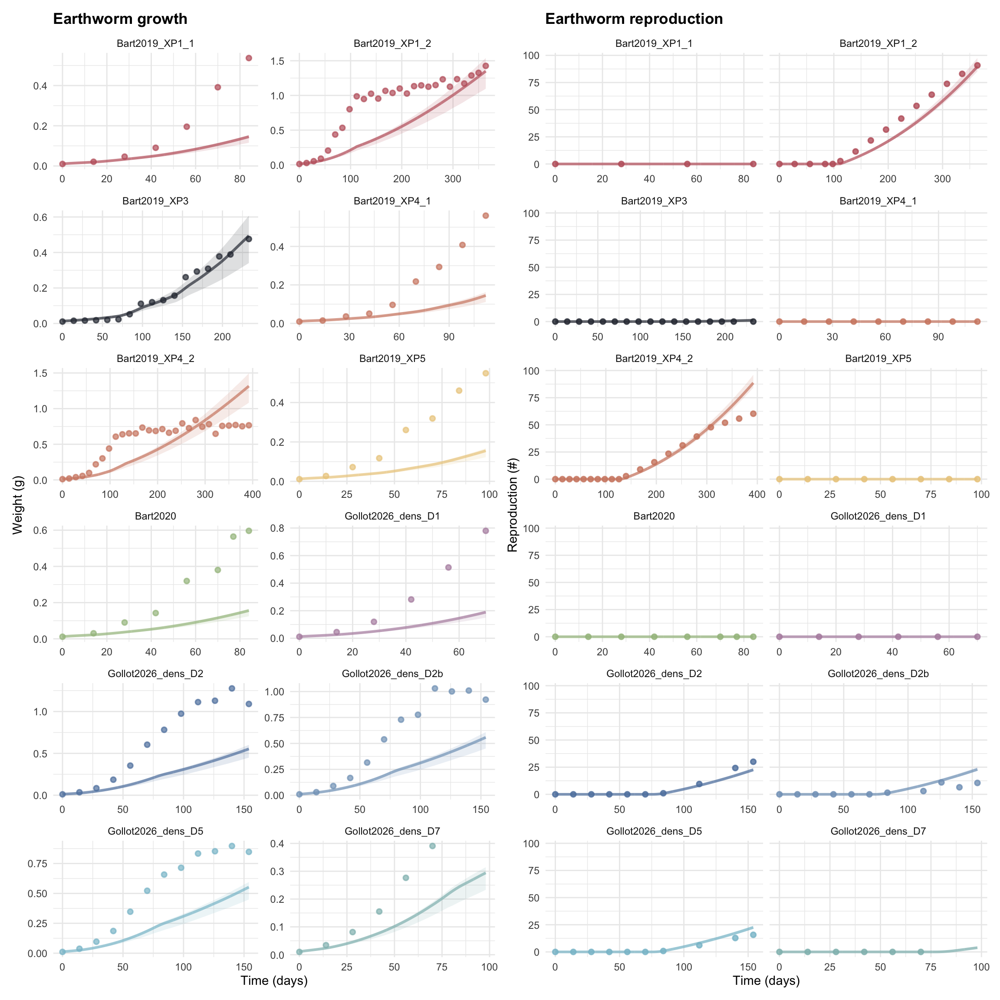
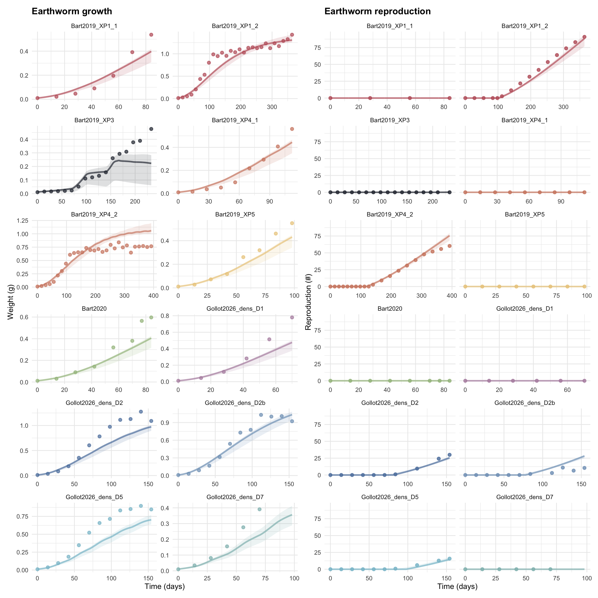

Figure 6.49: Results of the model fit on experimental data. Predicted values are represented with points with their respective credibility interval of 95%. Thin black and grey lines represent the 2-folds and 5-fold changes, respectively. The thicker black line represents the identity line.
Figure 6.50: Results of the model fit on experimental data. Predicted values are represented with points with their respective credibility interval of 95%. Thin black and grey lines represent the 2-folds and 5-fold changes, respectively. The thicker black line represents the identity line.
Figure 6.51: Results of the model fit on experimental data. Predicted values are represented with points with their respective credibility interval of 95%. Thin black and grey lines represent the 2-folds and 5-fold changes, respectively. The thicker black line represents the identity line.
Figure 6.52: Results of the model fit on experimental data. Predicted values are represented with points with their respective credibility interval of 95%. Thin black and grey lines represent the 2-folds and 5-fold changes, respectively. The thicker black line represents the identity line.
Figure 6.53: Results of the model fit on experimental data. Predicted values are represented with points with their respective credibility interval of 95%. Thin black and grey lines represent the 2-folds and 5-fold changes, respectively. The thicker black line represents the identity line.
Figure 6.54: Results of the model fit on experimental data. Predicted values are represented with points with their respective credibility interval of 95%. Thin black and grey lines represent the 2-folds and 5-fold changes, respectively. The thicker black line represents the identity line.
Figure 6.55: Results of the model fit on experimental data. Predicted values are represented with points with their respective credibility interval of 95%. Thin black and grey lines represent the 2-folds and 5-fold changes, respectively. The thicker black line represents the identity line.
Figure 6.56: Results of the model fit on experimental data. Predicted values are represented with points with their respective credibility interval of 95%. Thin black and grey lines represent the 2-folds and 5-fold changes, respectively. The thicker black line represents the identity line.
Figure 6.58: Predicted Weight and Reproduction for each experiment.
Figure 6.59: Predicted Weight and Reproduction for each experiment.

Figure 6.60: Predicted Weight and Reproduction for each experiment.
Figure 6.61: Predicted Weight and Reproduction for each experiment.
Figure 6.62: Predicted Weight and Reproduction for each experiment.
Figure 6.63: Predicted Weight and Reproduction for each experiment.
Figure 6.64: Predicted Weight and Reproduction for each experiment.

Figure 6.65: Predicted Weight and Reproduction for each experiment.
Calibration of all tested model formulations was achieved using three MCMC chains. Convergence diagnostics indicated satisfactory mixing and convergence overall, with chains converging toward similar posterior distributions and Gelman–Rubin statistics close to 1 (\(\hat{R}\)). However, for some model formulations, posterior estimates of specific parameters approached the upper or lower bounds of their biologically constrained priors, suggesting limited parameter identifiability or weak support for these formulations. Model comparison based on BIC revealed substantial differences among formulations (Table 6.1).
The two best-supported models shared three common characteristics: (i) a progressive change in energy allocation after maturation (C), (ii) a normalized hyperbolic functional response (K), and (iii) a formulation in which reserve contribution to fresh body mass was independent of structural size (e). The only difference between these two formulations concerned the scaling of the maximum searching rate, which was either structural-mass-specific (W) or surface-area-specific (L) : model W.K.C.e (BIC = 25.5) and model L.K.C.e (BIC = -31.3). whereas all other formulations had considerably higher BIC values (103-597).
Models assuming a fixed allocation rule throughout the life cycle (F) systematically resulted in poorer fits. Similarly, models using the classical hyperbolic formulation for the functional response (Y) showed much higher BIC values than those using the normalized formulation (K). In practice, these formulations systematically failed to reproduce observed growth trajectories, with predicted assimilation remaining insufficient to sustain realistic growth across experiments. Models assuming reserve contribution proportional to structure (w) also performed less well than formulations assuming reserve independence (e) (see Supplementary information Section S2).
Although the two best models had substantially different BIC values (\(\Delta\)BIC = 56.8), both provided qualitatively similar predictions for most datasets. However, they greatly differed for the key experiment Bart2019_XP3, where earthworms were alternately fed with soil only and soil supplemented with horse dung. The model with a structural-mass-specific maximum searching rate (W.K.C.e) reproduced the observed growth trajectory more accurately during the final phase of the experiment. This difference was reflected by a lower weight RMSE for the W.K.C.e compared with L.K.C.e (0.039 vs. 0.067, respectively). Consequently, despite a higher overall BIC, only W.K.C.e was retained for subsequent analyses because it provided a substantially better fit for Bart2019_XP3 while producing similar fits for the other experiments (Figure 6.61 & fig-pred_F_CLKe).
Parameter estimates for the retained model are presented in Table 6.1. Parameter values were generally consistent between W.K.C.e and L.K.C.e, with as expected, the main differences concerning the ingestion-related parameters \([\dot{F}_m]\), \(\{\dot{F}_m\}\) and \(K\). For both formulations, posterior estimates of the maximum searching rate approached the upper bound of the prior distribution.
Although the retained model adequately reproduced the main growth and reproduction trajectories across experiments (W.K.C.e), some condition-specific deviations remained. For body mass, grouped individuals under low-food conditions (Bart2019_XP4_2) showed an overestimation of the adult plateau, whereas the adult plateau was well estimated for grouped individuals under high-food conditions (Bart2019_XP1_2). In the density experiments at densities 2 and 5 (Gollot2026_D2 and Gollot2026_D5), the transition between juvenile growth and the adult plateau remained more abrupt in simulations than in observations, despite the introduction of a progressive allocation transition over the timescale parameter (\(\tau\)). In contrast, this transition was more accurately reproduced for individuals at density 2 with increased food supply (Gollot2026_D2b). Finally, the timing of maturation was overestimated in the density 5 condition (Gollot2026_D5).
For reproduction, the main deviations also corresponded to specific experimental conditions rather than to a general model bias. For grouped individuals under low-food conditions (Bart2019_XP4_2), observed reproduction decreased when density increased from three to six individuals per cosm, whereas the model predicted similar reproductive outputs between the two conditions. For individuals at density 2 with increased food supply (Gollot2026_D2b), reproductive output was overestimated, with observed reproduction remaining substantially lower than predicted by the model.
6.10 Organic matter dynamic and functional response
Figure 6.67: Results of the model fit on experimental data. Predicted values are represented with points with their respective credibility interval of 95%. Thin black and grey lines represent the 2-folds and 5-fold changes, respectively. The thicker black line represents the identity line.
Figure 6.68: Results of the model fit on experimental data. Predicted values are represented with points with their respective credibility interval of 95%. Thin black and grey lines represent the 2-folds and 5-fold changes, respectively. The thicker black line represents the identity line.
Figure 6.69: Results of the model fit on experimental data. Predicted values are represented with points with their respective credibility interval of 95%. Thin black and grey lines represent the 2-folds and 5-fold changes, respectively. The thicker black line represents the identity line.
The predicted-observed analysis highlighted condition-specific patterns in model fit and prediction bias. These comparisons remain descriptive because the experimental factors were not orthogonal, particularly density and per-capita food availability.
For body mass, fit quality was similar between temperatures, with mean fold values of 1.21 at 15 °C and 1.28 at 18 °C. The exponentiated mean log predicted-to-observed ratios were also close to 1 at both temperatures (1.11 and 0.92, respectively), providing no clear evidence of a marked temperature-specific bias. The higher reproduction residual observed at 18 °C was mainly driven by individuals at density 2 with increased food supply (Gollot2026_D2b) and therefore reflected a condition-specific overestimation rather than a general temperature effect.
For juveniles, fit quality decreased as density increased and per-capita food availability declined, with mean fold values ranging from 1.24 at density 1 to 1.55 at density 7. Negative mean log predicted-to-observed ratios at densities 5 and 7, and under the lowest food input, indicated a tendency to underestimate juvenile body mass under the most limiting conditions. Adult body mass was also underestimated at densities 2 and 5, whereas individuals grouped after puberty were accurately reproduced, with a mean fold of 1.12 and a mean log predicted-to-observed ratio close to zero.
Reproduction showed greater condition-specific variation than body mass, with both over- and underestimation across adult density and feeding treatments. The strongest overestimation occurred for individuals at density 2 with increased food supply (Gollot2026_D2b), which also corresponded to the highest per-capita food input. Overall, model deviations were associated with combinations of density, food availability, developmental stage, and experiment-specific conditions rather than with a single environmental factor.
6.12 Sensitivity analysis - CWKe
6.12.1 With temperature parameters
Code
path_fig <- here::here("fig/AS")path_AS <- here::here("mod/X_AS")seed <-361224Sobol_type <-"Jansen"Nb_sim <-30000# (p + 2) * Nb_sim simulations 30000CV <-0.1# 1000processors <-2Nboot <-1000# nb replicatl_params_median <-c(# EnvironmentmuOM =11700, rOM_ClxHorse =0.0204226,# Energy assimilationFm =6.92108, kapX =0.258, K =0.0778501, pAm =259.032, v =0.243464,kapJ =0.978502, kapA =0.643309, tau =9.65631,# Maintenance and growthr_pAm_pM =0.629551, Eg =4183, dv =1.21968, de =1.122480e-09,# MaturitykJ =0.002793, Ehb =0.5, Ehp =97.6156,# ReproductionE_coc =68.4189, kapR =0.475,# Metabolic response to TTAH =28750, TH =293.2, TA =7976, Tref =293.15)# With temperature parametersSobol_design_T <-f_AS_Sobol_design(Sobol_type = Sobol_type, seed = seed, Nb_sim = Nb_sim, CV = CV, Processors = Processors, Nboot = Nboot, l_params_median = l_params_median, Temperature_bol =TRUE)l_Sobol_param_T <- Sobol_design_T$Sobol_paramSobol_info_T <- Sobol_design_T$Sobolfile_rds_AS_T <-file.path(path_AS, paste0("df_Sobol_param_T.rds"))file_txt_AS_T <- here::here(paste0("mod/X_AS/Param_sobol_", Sobol_type, "_T.txt"))if (file.exists(file_rds_AS_T)) { df_Sobol_param_T <-readRDS(file_rds_AS_T)} else {library(data.table) df_Sobol_param_T <-rbindlist( l_Sobol_param_T,use.names =TRUE,fill =FALSE ) df_Sobol_param_T <-cbind(id =seq_len(nrow(df_Sobol_param_T)), df_Sobol_param_T)saveRDS(df_Sobol_param_T, file_rds_AS_T)fwrite( df_Sobol_param_T,file = file_txt_AS_T,sep ="\t",quote =FALSE )}# In the AS folder in the terminal :# makemcsim DEBcali.model# ./mcsim.DEBcali DEB_AS_T.in
Figure 6.75: Sobol Sensitivity Analysis - Comparison TI & FOI.
The global sensitivity analysis revealed that model outputs were strongly influenced by the parameters governing temperature correction when these were included in the analysis. The reference temperature (\(T_{\mathrm{ref}}\)) was the main driver of body mass, reserve energy, reproduction, and organic matter dynamics, while (\(T_H\)) also contributed substantially. Maturity-related endpoints were primarily controlled by the juvenile allocation fraction (\(\kappa_J\)). Differences between first-order and total-order indices indicated substantial interactions between temperature correction, energy allocation, and other physiological processes.
When temperature-related parameters were excluded, the sensitivity patterns became more process-specific. Body mass, maturity, and reproduction were mainly governed by (\(\kappa_J\)), whereas reserve energy was primarily influenced by the energy conductance (\(\nu\)) and the maximum assimilation rate (\(\{\dot{p}_{Am}\}\)). Organic matter remaining in the cosm was influenced by several ingestion- and assimilation-related parameters, particularly (\([\dot{F}_m]\)), (\(\kappa_X\)), (\(\mu_{OM}\)), and (\(d_V\)). These results highlight the central role of temperature correction and energy allocation in model predictions, while also showing that environmental resource dynamics depend on a broader set of interacting processes.
Source Code
```{r lib, include = F}library(here)source(file = here::here("functions/fun.R"))source(file = here::here("functions/fun_MCSim.R"))f_load_libraries_colors()col_Molecule <- rev(col_Molecule)pal_chains <- c(Nord_aurora, Nord_frost, Nord_polar)lab_chains <- c("1", "2", "3", "4", "5", "6", "7", "8")```# Model comparison {#sec-DEB}## Data importation```{r expfit, message=F, warning=F}path_fig <- here::here("fig/DEB_Models")path_A_FLYw <- here::here("mod/A_DEB_FLYw")path_B_FLYe <- here::here("mod/B_DEB_FLYe")path_C_CWYe <- here::here("mod/C_DEB_CWYe")path_D_CWKe <- here::here("mod/D_DEB_CWKe")path_E_CLYe <- here::here("mod/E_DEB_CLYe")path_F_CLKe <- here::here("mod/F_DEB_CLKe")path_G_FLKe <- here::here("mod/G_DEB_FLKe")path_H_FWKe <- here::here("mod/H_DEB_FWKe")l_Experiments_fit <- c( "Bart2019_XP1_1", "Bart2019_XP1_2", #"Bart2019_XP2", "Bart2019_XP3", "Bart2019_XP4_1", "Bart2019_XP4_2", "Bart2019_XP5", "Bart2020", #"Gollot2026_lufa" "Gollot2026_dens_D1", "Gollot2026_dens_D2", "Gollot2026_dens_D2b", "Gollot2026_dens_D5", "Gollot2026_dens_D7" )Adults_alone <- FALSEdf_data_fit <- f_import_data_DEB(l_Experiments_fit, Adults_alone) Experiments_carac <- f_get_experiments()l_Experiments_tot <- Experiments_carac$l_Experiments_totl_carac <- Experiments_carac$l_caracdf_carc_exp <- Experiments_carac$df_carc_exp``````{r, echo=F, message=F, warning=F, include = F}#| fig-cap: Experimental data from Bart et al. (2019) & (2020).#| label: fig-Bart#| fig-height: 12#| fig-width: 12l_Experiments_Bart <- c( "Bart2019_XP1_1", "Bart2019_XP1_2", #"Bart2019_XP2", "Bart2019_XP3", "Bart2019_XP4_1", "Bart2019_XP4_2", "Bart2019_XP5", "Bart2020"#, #"Gollot2026_lufa" # "Gollot2026_dens_D1", # "Gollot2026_dens_D2", # "Gollot2026_dens_D2b", # "Gollot2026_dens_D5", # "Gollot2026_dens_D7" )df_data_Bart <- f_import_data_DEB(l_Experiments_Bart, Adults_alone = TRUE) # Plot alpha_ribbon <- 0.15 line_width <- 1.1 point_stroke <- 0.9 alpha_line <- 0.7 wrap_nb_col <- 2 col_experiment <- c( Nord_aurora[1], Nord_aurora[1], Nord_polar[1], Nord_aurora[2], Nord_aurora[2], Nord_aurora[3], Nord_aurora[4], Nord_aurora[5], rev(Nord_frost) ) pW <- ggplot()+ geom_point( data = df_data_Bart, mapping = aes( x = Time, y = Weight, color = ID_experiment ), alpha = 0.7, stroke = point_stroke )+ scale_color_manual( name = "Experiments", values = col_experiment )+ scale_fill_manual( name = "Experiments", values = col_experiment )+ facet_wrap( ~ID_experiment, ncol = wrap_nb_col, scales = "free" )+ labs( x="Time (days)", y = "Weight (g)", title ="Earthworm growth" )+ theme_minimal() pR <- ggplot()+ geom_point( data = df_data_Bart, mapping = aes( x = Time, y = Reproduction, color = ID_experiment ), alpha = 0.8, stroke = point_stroke )+ scale_color_manual( name = "Experiments", values = col_experiment )+ scale_fill_manual( name = "Experiments", values = col_experiment )+ facet_wrap( ~ID_experiment, ncol=wrap_nb_col, scales = "free" )+ labs( x="Time (days)", y = "Reproduction (#)", title ="Earthworm reproduction" )+ theme_minimal()p <- pW + pR + plot_layout(guides = "collect") & guides(color = guide_legend("Experiments")) & theme(legend.position = "none")```## Model fits```{r writeIn, message=F, warning=F}NbIter <- 200000OM_diff <- TRUERTOL <- 1e-7ATOL <- 1e-6######### A FLYw ###############################################################seeds <- c(C1 = 3333, C2 = 3666, C3 = 2212)text_priors <- 'Distrib (Fm, LogUniform, 0.0001, 10);Distrib (pAm, TruncNormal_cv, 100, 0.2, 40, 2000);Distrib (r_pAm_pM, TruncNormal_cv, 0.8, 0.1, 0.1, 2);Distrib (v, TruncNormal_cv, 0.18505, 0.1, 0.001, 2);Distrib (kap, Uniform, 0, 1);Distrib (Ehp, TruncNormal_cv, 100, 0.2, 20, 300);Distrib (E_coc, TruncNormal_cv, 30, 0.2, 1, 300);Distrib (rOM_ClxHorse, LogUniform, 0.00001, 0.3);Distrib (dv, TruncNormal_cv, 1, 0.05, 0, 4);Distrib (wE, LogUniform, 1, 1000);# Calcul des vraissemblancesDistrib (Sigma_W, TruncNormal, 5, 1, 0.01, 100);'text_likelihood <- 'Likelihood (Weight, Normal, Prediction(Weight), Sigma_W); Likelihood (Reproduction, Poisson, Prediction(Reproduction));'f_In_tot(path_A_FLYw, l_Experiments_fit, Adults_alone, text_priors, text_likelihood, NbIter, seeds, RTOL, ATOL)######### B FLYe ###############################################################seeds <- c(C1 = 3313, C2 = 5050, C3 = 6863)text_priors <- 'Distrib (Fm, LogUniform, 0.0001, 10);Distrib (pAm, TruncNormal_cv, 100, 0.2, 40, 2000);Distrib (r_pAm_pM, TruncNormal_cv, 0.8, 0.1, 0.1, 2);Distrib (v, TruncNormal_cv, 0.18505, 0.1, 0.001, 2);Distrib (kap, Uniform, 0, 1);Distrib (Ehp, TruncNormal_cv, 100, 0.2, 20, 300);Distrib (E_coc, TruncNormal_cv, 30, 0.2, 1, 300);Distrib (rOM_ClxHorse, LogUniform, 0.00001, 0.3);Distrib (dv, TruncNormal_cv, 1, 0.05, 0, 4);Distrib (de, LogUniform, 0.000000001, 0.1);# Calcul des vraissemblancesDistrib (Sigma_W, TruncNormal, 5, 1, 0.01, 100);'text_likelihood <- 'Likelihood (Weight, Normal, Prediction(Weight), Sigma_W); Likelihood (Reproduction, Poisson, Prediction(Reproduction));'f_In_tot(path_B_FLYe, l_Experiments_fit, Adults_alone, text_priors, text_likelihood, NbIter, seeds, RTOL, ATOL)######### C CWYe ###############################################################seeds <- c(C1 = 2291, C2 = 5005, C3 = 7007)text_priors <- 'Distrib (Fm, LogUniform, 0.0001, 10);Distrib (pAm, TruncNormal_cv, 100, 0.2, 40, 2000);Distrib (r_pAm_pM, TruncNormal_cv, 0.8, 0.1, 0.1, 2);Distrib (v, TruncNormal_cv, 0.18505, 0.1, 0.001, 2);Distrib (kapJ, Uniform, 0, 1);Distrib (kapA, Uniform, 0, 1);Distrib (Ehp, TruncNormal_cv, 100, 0.2, 20, 300);Distrib (E_coc, TruncNormal_cv, 30, 0.2, 1, 300);Distrib (rOM_ClxHorse, LogUniform, 0.00001, 0.3);Distrib (dv, TruncNormal_cv, 1, 0.05, 0, 4);Distrib (de, LogUniform, 0.000000001, 0.1);Distrib (tau, TruncNormal_cv, 7, 0.5, 0, 50);# Calcul des vraissemblancesDistrib (Sigma_W, TruncNormal, 5, 1, 0.01, 100);'text_likelihood <- 'Likelihood (Weight, Normal, Prediction(Weight), Sigma_W); Likelihood (Reproduction, Poisson, Prediction(Reproduction));'f_In_tot(path_C_CWYe, l_Experiments_fit, Adults_alone, text_priors, text_likelihood, NbIter, seeds, RTOL, ATOL)######### D CWKe ###############################################################seeds <- c(C1 = 3320, C2 = 6636, C3 = 1283)text_priors <- 'Distrib (Fm, LogUniform, 0.0001, 10);Distrib (pAm, TruncNormal_cv, 100, 0.2, 40, 2000);Distrib (r_pAm_pM, TruncNormal_cv, 0.8, 0.1, 0.1, 2);Distrib (v, TruncNormal_cv, 0.18505, 0.1, 0.001, 2);Distrib (kapJ, Uniform, 0, 1);Distrib (kapA, Uniform, 0, 1);Distrib (Ehp, TruncNormal_cv, 100, 0.2, 20, 300);Distrib (E_coc, TruncNormal_cv, 30, 0.2, 1, 300);Distrib (rOM_ClxHorse, LogUniform, 0.00001, 0.3);Distrib (K, Uniform, 0.0001, 1);Distrib (dv, TruncNormal_cv, 1, 0.05, 0, 4);Distrib (de, LogUniform, 0.000000001, 0.1);Distrib (tau, TruncNormal_cv, 7, 0.5, 0, 50);# Calcul des vraissemblancesDistrib (Sigma_W, TruncNormal, 5, 1, 0.01, 100);'text_likelihood <- 'Likelihood (Weight, Normal, Prediction(Weight), Sigma_W); Likelihood (Reproduction, Poisson, Prediction(Reproduction));'f_In_tot(path_D_CWKe, l_Experiments_fit, Adults_alone, text_priors, text_likelihood, NbIter, seeds, RTOL, ATOL)######### E CLYe ###############################################################seeds <- c(C1 = 3300, C2 = 7880, C3 = 1210)text_priors <- 'Distrib (Fm, LogUniform, 0.0001, 10);Distrib (pAm, TruncNormal_cv, 100, 0.2, 40, 2000);Distrib (r_pAm_pM, TruncNormal_cv, 0.8, 0.1, 0.1, 2);Distrib (v, TruncNormal_cv, 0.18505, 0.1, 0.001, 2);Distrib (kapJ, Uniform, 0, 1);Distrib (kapA, Uniform, 0, 1);Distrib (Ehp, TruncNormal_cv, 100, 0.2, 20, 300);Distrib (E_coc, TruncNormal_cv, 30, 0.2, 1, 300);Distrib (rOM_ClxHorse, LogUniform, 0.00001, 0.3);Distrib (dv, TruncNormal_cv, 1, 0.05, 0, 4);Distrib (de, LogUniform, 0.000000001, 0.1);Distrib (tau, TruncNormal_cv, 7, 0.5, 0, 50);# Calcul des vraissemblancesDistrib (Sigma_W, TruncNormal, 5, 1, 0.01, 100);'text_likelihood <- 'Likelihood (Weight, Normal, Prediction(Weight), Sigma_W); Likelihood (Reproduction, Poisson, Prediction(Reproduction));'f_In_tot(path_E_CLYe, l_Experiments_fit, Adults_alone, text_priors, text_likelihood, NbIter, seeds, RTOL, ATOL)######### F CLKe ###############################################################seeds <- c(C1 = 3030, C2 = 6646, C3 = 1212)text_priors <- 'Distrib (Fm, LogUniform, 0.0001, 10);Distrib (pAm, TruncNormal_cv, 100, 0.2, 40, 2000);Distrib (r_pAm_pM, TruncNormal_cv, 0.8, 0.1, 0.1, 2);Distrib (v, TruncNormal_cv, 0.18505, 0.1, 0.001, 2);Distrib (kapJ, Uniform, 0, 1);Distrib (kapA, Uniform, 0, 1);Distrib (Ehp, TruncNormal_cv, 100, 0.2, 20, 300);Distrib (E_coc, TruncNormal_cv, 30, 0.2, 1, 300);Distrib (rOM_ClxHorse, LogUniform, 0.00001, 0.3);Distrib (K, Uniform, 0.00001, 2);Distrib (dv, TruncNormal_cv, 1, 0.05, 0, 4);Distrib (de, LogUniform, 0.000000001, 0.1);Distrib (tau, TruncNormal_cv, 7, 0.5, 0, 50);# Calcul des vraissemblancesDistrib (Sigma_W, TruncNormal, 5, 1, 0.01, 100);'text_likelihood <- 'Likelihood (Weight, Normal, Prediction(Weight), Sigma_W); Likelihood (Reproduction, Poisson, Prediction(Reproduction));'f_In_tot(path_F_CLKe, l_Experiments_fit, Adults_alone, text_priors, text_likelihood, NbIter, seeds, RTOL, ATOL)######### G FLKe ###############################################################seeds <- c(C1 = 3133, C2 = 6666, C3 = 1212)text_priors <- 'Distrib (Fm, LogUniform, 0.0001, 10);Distrib (pAm, TruncNormal_cv, 100, 0.2, 40, 2000);Distrib (r_pAm_pM, TruncNormal_cv, 0.8, 0.1, 0.1, 2);Distrib (v, TruncNormal_cv, 0.18505, 0.1, 0.001, 2);Distrib (kap, Uniform, 0, 1);Distrib (Ehp, TruncNormal_cv, 100, 0.2, 20, 300);Distrib (E_coc, TruncNormal_cv, 30, 0.2, 1, 300);Distrib (rOM_ClxHorse, LogUniform, 0.00001, 0.3);Distrib (K, Uniform, 0.00001, 2);Distrib (dv, TruncNormal_cv, 1, 0.05, 0, 4);Distrib (de, LogUniform, 0.000000001, 0.1);# Calcul des vraissemblancesDistrib (Sigma_W, TruncNormal, 5, 1, 0.01, 100);'text_likelihood <- 'Likelihood (Weight, Normal, Prediction(Weight), Sigma_W); Likelihood (Reproduction, Poisson, Prediction(Reproduction));'f_In_tot(path_G_FLKe, l_Experiments_fit, Adults_alone, text_priors, text_likelihood, NbIter, seeds, RTOL, ATOL)######### H FWKe ###############################################################seeds <- c(C1 = 3133, C2 = 6666, C3 = 1212)text_priors <- 'Distrib (Fm, LogUniform, 0.0001, 10);Distrib (pAm, TruncNormal_cv, 100, 0.2, 40, 2000);Distrib (r_pAm_pM, TruncNormal_cv, 0.8, 0.1, 0.1, 2);Distrib (v, TruncNormal_cv, 0.18505, 0.1, 0.001, 2);Distrib (kap, Uniform, 0, 1);Distrib (Ehp, TruncNormal_cv, 100, 0.2, 20, 300);Distrib (E_coc, TruncNormal_cv, 30, 0.2, 1, 300);Distrib (rOM_ClxHorse, LogUniform, 0.00001, 0.3);Distrib (K, Uniform, 0.00001, 2);Distrib (dv, TruncNormal_cv, 1, 0.05, 0, 4);Distrib (de, LogUniform, 0.000000001, 0.1);# Calcul des vraissemblancesDistrib (Sigma_W, TruncNormal, 5, 1, 0.01, 100);'text_likelihood <- 'Likelihood (Weight, Normal, Prediction(Weight), Sigma_W); Likelihood (Reproduction, Poisson, Prediction(Reproduction));'f_In_tot(path_H_FWKe, l_Experiments_fit, Adults_alone, text_priors, text_likelihood, NbIter, seeds, RTOL, ATOL)```## Estimates results```{r getres, echo=F, message=F, warning=F}n_data_Weight <- length(na.omit(df_data_fit$Weight))n_data_Reproduction <- length(na.omit(df_data_fit$Reproduction))n_data_fit <- n_data_Weight + n_data_Reproduction######### A FLYw ###############################################################MCMC_out_A_FLYw <- f_MCSim(path_A_FLYw)NC_A_FLYw <- MCMC_out_A_FLYw$NCNb_param_A_FLYw <- MCMC_out_A_FLYw$Nb_paramNb_experiment_A_FLYw <- MCMC_out_A_FLYw$Nb_experimentNb_iter_kept_A_FLYw <- MCMC_out_A_FLYw$Nb_iter_keptN_iter_setpoint_A_FLYw <- MCMC_out_A_FLYw$N_iter_setpointL_parameters_A_FLYw <- unique(MCMC_out_A_FLYw$Priors$Nom)LL_A_FLYw <- f_get_mode(MCMC_out_A_FLYw$df_LnData$LnData)k_A_FLYw <- Nb_param_A_FLYw - 1 # On enlève le Sigma_WBIC_A_FLYw <- -2*LL_A_FLYw+k_A_FLYw*log(n_data_fit)Summary_res_A_FLYw <- as.data.frame(MCMC_out_A_FLYw$Summary_res)[1:length(L_parameters_A_FLYw)] |> mutate(Model = "A_FLYw") ######### B FLYe ###############################################################MCMC_out_B_FLYe <- f_MCSim(path_B_FLYe)NC_B_FLYe <- MCMC_out_B_FLYe$NCNb_param_B_FLYe <- MCMC_out_B_FLYe$Nb_paramNb_experiment_B_FLYe <- MCMC_out_B_FLYe$Nb_experimentNb_iter_kept_B_FLYe <- MCMC_out_B_FLYe$Nb_iter_keptN_iter_setpoint_B_FLYe <- MCMC_out_B_FLYe$N_iter_setpointL_parameters_B_FLYe <- unique(MCMC_out_B_FLYe$Priors$Nom)LL_B_FLYe <- f_get_mode(MCMC_out_B_FLYe$df_LnData$LnData)k_B_FLYe <- Nb_param_B_FLYe - 1 # On enlève le Sigma_WBIC_B_FLYe <- -2*LL_B_FLYe+k_B_FLYe*log(n_data_fit)Summary_res_B_FLYe <- as.data.frame(MCMC_out_B_FLYe$Summary_res)[1:length(L_parameters_B_FLYe)] |> mutate(Model = "B_FLYe") ######### C CWYe ###############################################################MCMC_out_C_CWYe <- f_MCSim(path_C_CWYe)NC_C_CWYe <- MCMC_out_C_CWYe$NCNb_param_C_CWYe <- MCMC_out_C_CWYe$Nb_paramNb_experiment_C_CWYe <- MCMC_out_C_CWYe$Nb_experimentNb_iter_kept_C_CWYe <- MCMC_out_C_CWYe$Nb_iter_keptN_iter_setpoint_C_CWYe <- MCMC_out_C_CWYe$N_iter_setpointL_parameters_C_CWYe <- unique(MCMC_out_C_CWYe$Priors$Nom)LL_C_CWYe <- f_get_mode(MCMC_out_C_CWYe$df_LnData$LnData)k_C_CWYe <- Nb_param_C_CWYe - 1 # On enlève le Sigma_WBIC_C_CWYe <- -2*LL_C_CWYe+k_C_CWYe*log(n_data_fit)Summary_res_C_CWYe <- as.data.frame(MCMC_out_C_CWYe$Summary_res)[1:length(L_parameters_C_CWYe)] |> mutate(Model = "C_CWYe") ######### D CWKe ###############################################################MCMC_out_D_CWKe <- f_MCSim(path_D_CWKe)NC_D_CWKe <- MCMC_out_D_CWKe$NCNb_param_D_CWKe <- MCMC_out_D_CWKe$Nb_paramNb_experiment_D_CWKe <- MCMC_out_D_CWKe$Nb_experimentNb_iter_kept_D_CWKe <- MCMC_out_D_CWKe$Nb_iter_keptN_iter_setpoint_D_CWKe <- MCMC_out_D_CWKe$N_iter_setpointL_parameters_D_CWKe <- unique(MCMC_out_D_CWKe$Priors$Nom)LL_D_CWKe <- f_get_mode(MCMC_out_D_CWKe$df_LnData$LnData)k_D_CWKe <- Nb_param_D_CWKe - 1 # On enlève le Sigma_WBIC_D_CWKe <- -2*LL_D_CWKe+k_D_CWKe*log(n_data_fit)Summary_res_D_CWKe <- as.data.frame(MCMC_out_D_CWKe$Summary_res)[1:length(L_parameters_D_CWKe)] |> mutate(Model = "D_CWKe") ######### E CLYe ###############################################################MCMC_out_E_CLYe <- f_MCSim(path_E_CLYe)NC_E_CLYe <- MCMC_out_E_CLYe$NCNb_param_E_CLYe <- MCMC_out_E_CLYe$Nb_paramNb_experiment_E_CLYe <- MCMC_out_E_CLYe$Nb_experimentNb_iter_kept_E_CLYe <- MCMC_out_E_CLYe$Nb_iter_keptN_iter_setpoint_E_CLYe <- MCMC_out_E_CLYe$N_iter_setpointL_parameters_E_CLYe <- unique(MCMC_out_E_CLYe$Priors$Nom)LL_E_CLYe <- f_get_mode(MCMC_out_E_CLYe$df_LnData$LnData)k_E_CLYe <- Nb_param_E_CLYe - 1 # On enlève le Sigma_WBIC_E_CLYe <- -2*LL_E_CLYe+k_E_CLYe*log(n_data_fit)Summary_res_E_CLYe <- as.data.frame(MCMC_out_E_CLYe$Summary_res)[1:length(L_parameters_E_CLYe)] |> mutate(Model = "E_CLYe") ######### F CLKe ###############################################################MCMC_out_F_CLKe <- f_MCSim(path_F_CLKe)NC_F_CLKe <- MCMC_out_F_CLKe$NCNb_param_F_CLKe <- MCMC_out_F_CLKe$Nb_paramNb_experiment_F_CLKe <- MCMC_out_F_CLKe$Nb_experimentNb_iter_kept_F_CLKe <- MCMC_out_F_CLKe$Nb_iter_keptN_iter_setpoint_F_CLKe <- MCMC_out_F_CLKe$N_iter_setpointL_parameters_F_CLKe <- unique(MCMC_out_F_CLKe$Priors$Nom)LL_F_CLKe <- f_get_mode(MCMC_out_F_CLKe$df_LnData$LnData)k_F_CLKe <- Nb_param_F_CLKe - 1 # On enlève le Sigma_WBIC_F_CLKe <- -2*LL_F_CLKe+k_F_CLKe*log(n_data_fit)Summary_res_F_CLKe <- as.data.frame(MCMC_out_F_CLKe$Summary_res)[1:length(L_parameters_F_CLKe)] |> mutate(Model = "F_CLKe") ######### G FLKe ###############################################################MCMC_out_G_FLKe <- f_MCSim(path_G_FLKe)NC_G_FLKe <- MCMC_out_G_FLKe$NCNb_param_G_FLKe <- MCMC_out_G_FLKe$Nb_paramNb_experiment_G_FLKe <- MCMC_out_G_FLKe$Nb_experimentNb_iter_kept_G_FLKe <- MCMC_out_G_FLKe$Nb_iter_keptN_iter_setpoint_G_FLKe <- MCMC_out_G_FLKe$N_iter_setpointL_parameters_G_FLKe <- unique(MCMC_out_G_FLKe$Priors$Nom)LL_G_FLKe <- f_get_mode(MCMC_out_G_FLKe$df_LnData$LnData)k_G_FLKe <- Nb_param_G_FLKe - 1 # On enlève le Sigma_WBIC_G_FLKe <- -2*LL_G_FLKe+k_G_FLKe*log(n_data_fit)Summary_res_G_FLKe <- as.data.frame(MCMC_out_G_FLKe$Summary_res)[1:length(L_parameters_G_FLKe)] |> mutate(Model = "G_FLKe") ######### F CLKe ###############################################################MCMC_out_H_FWKe <- f_MCSim(path_H_FWKe)NC_H_FWKe <- MCMC_out_H_FWKe$NCNb_param_H_FWKe <- MCMC_out_H_FWKe$Nb_paramNb_experiment_H_FWKe <- MCMC_out_H_FWKe$Nb_experimentNb_iter_kept_H_FWKe <- MCMC_out_H_FWKe$Nb_iter_keptN_iter_setpoint_H_FWKe <- MCMC_out_H_FWKe$N_iter_setpointL_parameters_H_FWKe <- unique(MCMC_out_H_FWKe$Priors$Nom)LL_H_FWKe <- f_get_mode(MCMC_out_H_FWKe$df_LnData$LnData)k_H_FWKe <- Nb_param_H_FWKe - 1 # On enlève le Sigma_WBIC_H_FWKe <- -2*LL_H_FWKe+k_H_FWKe*log(n_data_fit)Summary_res_H_FWKe <- as.data.frame(MCMC_out_H_FWKe$Summary_res)[1:length(L_parameters_H_FWKe)] |> mutate(Model = "H_FWKe") list_models <- c("A_FLYw", "B_FLYe", "C_CWYe", "D_CWKe", "E_CLYe", "F_CLKe", "G_FLKe", "H_FWKe")df_LL_BIC <- data.frame( Model = list_models, LL = round(unlist(mget(paste0("LL_", list_models))), 2), BIC = round(unlist(mget(paste0("BIC_", list_models))), 2))``````{r resall}#| tbl-cap: Estimation results from all models. #| label: tbl-ResModelslist_models <- c("A_FLYw", "B_FLYe", "C_CWYe", "D_CWKe", "E_CLYe", "F_CLKe", "G_FLKe", "H_FWKe")list_model_summary <- mget(paste0("Summary_res_", list_models))param_order <- c( "pAm", "r_pAm_pM", "Fm", "rOM_ClxHorse", "K", "v", "kap", "kapJ", "kapA", "tau", "Ehp", "E_coc", "dv", "de", "wE", "Sigma_W")format_summary <- function(df) { df %>% rename_with(~ str_remove(., "\\.1\\.$")) %>% rownames_to_column("stat") %>% pivot_longer( cols = -c(stat, Model), names_to = "param", values_to = "value" ) %>% pivot_wider( names_from = stat, values_from = value ) %>% mutate( value = str_c( round(Result_mode, 3), " [", round(`2.5%`, 3), " ; ", round(`97.5%`, 3), "]" ) ) %>% dplyr::select(Model, param, value) %>% pivot_wider( names_from = param, values_from = value )}df_result <- list_model_summary %>% map(format_summary) %>% bind_rows() %>% dplyr::select( Model, any_of(param_order), everything() ) |> left_join(df_LL_BIC)df_result |> datatable( options = list( dom = 't', autoWidth = TRUE, columnDefs = list( list(className = 'dt-left', targets = "_all") ) ), class="hover" )```## Chains::: panel-tabset## A_FLYw```{r, echo=F, message=F, warning=F}#| fig-cap: Parameters chains. Only the last `r Nb_iter_kept` are represented.#| label: fig-chains_A_FLYw#| fig-height: 8#| fig-width: 8p_chains <- f_Plot_MCMC_Chains(MCMC_out_A_FLYw)p_chains``````{r savechainsA_FLYw, include = F}ggsave( filename="A_FLYw_chains.png", plot=p_chains, width=8, height = 8, path=path_fig )```## B_FLYe```{r, echo=F, message=F, warning=F}#| fig-cap: Parameters chains. Only the last `r Nb_iter_kept` are represented.#| label: fig-chains_B_FLYe#| fig-height: 8#| fig-width: 8p_chains <- f_Plot_MCMC_Chains(MCMC_out_B_FLYe)p_chains``````{r savechainsB_FLYe, include = F}ggsave( filename="B_FLYe_chains.png", plot=p_chains, width=8, height = 8, path=path_fig )```## C_CWYe```{r, echo=F, message=F, warning=F}#| fig-cap: Parameters chains. Only the last `r Nb_iter_kept` are represented.#| label: fig-chains_C_CWYe#| fig-height: 8#| fig-width: 8p_chains <- f_Plot_MCMC_Chains(MCMC_out_C_CWYe)p_chains``````{r savechainsC_CWYe, include = F}ggsave( filename="C_CWYe_chains.png", plot=p_chains, width=8, height = 8, path=path_fig )```## D_CWKe```{r, echo=F, message=F, warning=F}#| fig-cap: Parameters chains. Only the last `r Nb_iter_kept` are represented.#| label: fig-chains_D_CWKe#| fig-height: 8#| fig-width: 8p_chains <- f_Plot_MCMC_Chains(MCMC_out_D_CWKe)p_chains``````{r savechainsD_CWKe, include = F}ggsave( filename="D_CWKe_chains.png", plot=p_chains, width=8, height = 8, path=path_fig )```## E_CLYe```{r, echo=F, message=F, warning=F}#| fig-cap: Parameters chains. Only the last `r Nb_iter_kept` are represented.#| label: fig-chains_E_CLYe#| fig-height: 8#| fig-width: 8p_chains <- f_Plot_MCMC_Chains(MCMC_out_E_CLYe)p_chains``````{r savechainsE_CLYe, include = F}ggsave( filename="E_CLYe_chains.png", plot=p_chains, width=8, height = 8, path=path_fig )```## F_CLKe```{r, echo=F, message=F, warning=F}#| fig-cap: Parameters chains. Only the last `r Nb_iter_kept` are represented.#| label: fig-chains_F_CLKe#| fig-height: 8#| fig-width: 8p_chains <- f_Plot_MCMC_Chains(MCMC_out_F_CLKe)p_chains``````{r savechainsF_CLKe, include = F}ggsave( filename="F_CLKe_chains.png", plot=p_chains, width=8, height = 8, path=path_fig )```## G_FLKe```{r, echo=F, message=F, warning=F}#| fig-cap: Parameters chains. Only the last `r Nb_iter_kept` are represented.#| label: fig-chains_G_FLKe#| fig-height: 8#| fig-width: 8p_chains <- f_Plot_MCMC_Chains(MCMC_out_G_FLKe)p_chains``````{r savechainsG_FLKe, include = F}ggsave( filename="G_FLKe_chains.png", plot=p_chains, width=8, height = 8, path=path_fig )```## H_FWKe```{r, echo=F, message=F, warning=F}#| fig-cap: Parameters chains. Only the last `r Nb_iter_kept` are represented.#| label: fig-chains_H_FWKe#| fig-height: 8#| fig-width: 8p_chains <- f_Plot_MCMC_Chains(MCMC_out_H_FWKe)p_chains``````{r savechainsH_FWKe, include = F}ggsave( filename="H_FWKe_chains.png", plot=p_chains, width=8, height = 8, path=path_fig )```:::## Likelihoods::: panel-tabset## A_FLYw```{r, message=F, warning=F, echo=F}#| fig-cap: Evolution of likelihood and deviance ratio through the iterations.#| label: fig-like_A_FLYw#| fig-height: 8#| fig-width: 8p_LL <- f_Plots_MCMC_Likelihood(MCMC_out_A_FLYw)p_LL``````{r saveLLA_FLYw, include = F}ggsave( filename="A_FLYw_chainsLL.png", plot=p_LL, width=8, height = 4, path=path_fig )```## B_FLYe```{r, message=F, warning=F, echo=F}#| fig-cap: Evolution of likelihood and deviance ratio through the iterations.#| label: fig-like_B_FLYe#| fig-height: 8#| fig-width: 8p_LL <- f_Plots_MCMC_Likelihood(MCMC_out_B_FLYe)p_LL``````{r saveLLB_FLYe, include = F}ggsave( filename="B_FLYe_chainsLL.png", plot=p_LL, width=8, height = 4, path=path_fig )```## C_CWYe```{r, message=F, warning=F, echo=F}#| fig-cap: Evolution of likelihood and deviance ratio through the iterations.#| label: fig-like_C_CWYe#| fig-height: 8#| fig-width: 8p_LL <- f_Plots_MCMC_Likelihood(MCMC_out_C_CWYe)p_LL``````{r saveLLC_CWYe, include = F}ggsave( filename="C_CWYe_chainsLL.png", plot=p_LL, width=8, height = 4, path=path_fig )```## D_CWKe```{r, message=F, warning=F, echo=F}#| fig-cap: Evolution of likelihood and deviance ratio through the iterations.#| label: fig-like_D_CWKe#| fig-height: 8#| fig-width: 8p_LL <- f_Plots_MCMC_Likelihood(MCMC_out_D_CWKe)p_LL``````{r saveLLD_CWKe, include = F}ggsave( filename="D_CWKe_chainsLL.png", plot=p_LL, width=8, height = 4, path=path_fig )```## E_CLYe```{r, message=F, warning=F, echo=F}#| fig-cap: Evolution of likelihood and deviance ratio through the iterations.#| label: fig-like_E_CLYe#| fig-height: 8#| fig-width: 8p_LL <- f_Plots_MCMC_Likelihood(MCMC_out_E_CLYe)p_LL``````{r saveLLE_CLYe, include = F}ggsave( filename="E_CLYe_chainsLL.png", plot=p_LL, width=8, height = 4, path=path_fig )```## F_CLKe```{r, message=F, warning=F, echo=F}#| fig-cap: Evolution of likelihood and deviance ratio through the iterations.#| label: fig-like_F_CLKe#| fig-height: 8#| fig-width: 8p_LL <- f_Plots_MCMC_Likelihood(MCMC_out_F_CLKe)p_LL``````{r saveLLF_CLKe, include = F}ggsave( filename="F_CLKe_chainsLL.png", plot=p_LL, width=8, height = 4, path=path_fig )```## G_FLKe```{r, message=F, warning=F, echo=F}#| fig-cap: Evolution of likelihood and deviance ratio through the iterations.#| label: fig-like_G_FLKe#| fig-height: 8#| fig-width: 8p_LL <- f_Plots_MCMC_Likelihood(MCMC_out_G_FLKe)p_LL``````{r saveLLG_FLKe, include = F}ggsave( filename="G_FLKe_chainsLL.png", plot=p_LL, width=8, height = 4, path=path_fig )```## H_FWKe```{r, message=F, warning=F, echo=F}#| fig-cap: Evolution of likelihood and deviance ratio through the iterations.#| label: fig-like_H_FWKe#| fig-height: 8#| fig-width: 8p_LL <- f_Plots_MCMC_Likelihood(MCMC_out_H_FWKe)p_LL``````{r saveLLH_FWKe, include = F}ggsave( filename="H_FWKe_chainsLL.png", plot=p_LL, width=8, height = 4, path=path_fig )```:::## Chains convergence::: panel-tabset## A_FLYw```{r, echo=F, message=F, warning=F}#| fig-cap: Chains convergence.#| label: fig-chainsconvergence_A_FLYw#| fig-height: 8#| fig-width: 8gelman <- f_Plot_Convergence(MCMC_out_A_FLYw)print(gelman)``````{r corr, message=F, warning=F}#| fig-cap: Parameter correlations.#| label: fig-corr_A_FLYw#| fig-height: 5#| fig-width: 6file_rds <- here::here("fig/DEBTKTD_Models/A_FLYw_ipairs_plot.png")f_Plot_ipairs(MCMC_out_A_FLYw, file_rds)```## B_FLYe```{r, echo=F, message=F, warning=F}#| fig-cap: Chains convergence.#| label: fig-chainsconvergence_B_FLYe#| fig-height: 8#| fig-width: 8gelman <- f_Plot_Convergence(MCMC_out_B_FLYe)print(gelman)``````{r corr, message=F, warning=F}#| fig-cap: Parameter correlations.#| label: fig-corr_B_FLYe#| fig-height: 5#| fig-width: 6file_rds <- here::here("fig/DEBTKTD_Models/B_FLYe_ipairs_plot.png")f_Plot_ipairs(MCMC_out_B_FLYe, file_rds)```## C_CWYe```{r, echo=F, message=F, warning=F}#| fig-cap: Chains convergence.#| label: fig-chainsconvergence_C_CWYe#| fig-height: 8#| fig-width: 8gelman <- f_Plot_Convergence(MCMC_out_C_CWYe)print(gelman)``````{r corr, message=F, warning=F}#| fig-cap: Parameter correlations.#| label: fig-corr_C_CWYe#| fig-height: 5#| fig-width: 6file_rds <- here::here("fig/DEBTKTD_Models/C_CWYe_ipairs_plot.png")f_Plot_ipairs(MCMC_out_C_CWYe, file_rds)```## D_CWKe```{r, echo=F, message=F, warning=F}#| fig-cap: Chains convergence.#| label: fig-chainsconvergence_D_CWKe#| fig-height: 8#| fig-width: 8gelman <- f_Plot_Convergence(MCMC_out_D_CWKe)print(gelman)``````{r corr, message=F, warning=F}#| fig-cap: Parameter correlations.#| label: fig-corr_D_CWKe#| fig-height: 5#| fig-width: 6file_rds <- here::here("fig/DEBTKTD_Models/D_CWKe_ipairs_plot.png")f_Plot_ipairs(MCMC_out_D_CWKe, file_rds)``````{r, include = F}col_corr <- colorRampPalette(c( "#BF616A", # corrélations négatives "white", "#5E81AC" # corrélations positives))(200)params_keep <- c("E_coc.1.", "Ehp.1.", "Fm.1.", "K.1.", "kapA.1.", "kapJ.1.", "pAm.1.", "r_pAm_pM.1.")mcmc_list_corr_D_CWKe <- f_mcmc_list_corr(MCMC_out_D_CWKe)df_corr_D <- cor(as.matrix(mcmc_list_corr_D_CWKe)[, params_keep])dimnames(df_corr_D) <- lapply( dimnames(df_corr_D), \(x) gsub("\\.1\\.$", "", x))png(file.path(path_fig, "D_CWKe_corrplot_article.png"), width = 2000, height = 2000, res = 300)op <- par(font = 2)corrplot.mixed( df_corr_D, lower = "ellipse", upper = "number", tl.col = "#2E3440", tl.cex = 0.6, tl.pos = "d", number.cex = 0.7, tl.srt = 45, lower.col = col_corr, upper.col = col_corr)par(op)dev.off()```## E_CLYe```{r, echo=F, message=F, warning=F}#| fig-cap: Chains convergence.#| label: fig-chainsconvergence_E_CLYe#| fig-height: 8#| fig-width: 8gelman <- f_Plot_Convergence(MCMC_out_E_CLYe)print(gelman)``````{r corr, message=F, warning=F}#| fig-cap: Parameter correlations.#| label: fig-corr_E_CLYe#| fig-height: 5#| fig-width: 6file_rds <- here::here("fig/DEBTKTD_Models/E_CLYe_ipairs_plot.png")f_Plot_ipairs(MCMC_out_E_CLYe, file_rds)```## F_CLKe```{r, echo=F, message=F, warning=F}#| fig-cap: Chains convergence.#| label: fig-chainsconvergence_F_CLKe#| fig-height: 8#| fig-width: 8gelman <- f_Plot_Convergence(MCMC_out_F_CLKe)print(gelman)``````{r corr, message=F, warning=F}#| fig-cap: Parameter correlations.#| label: fig-corr_F_CLKe#| fig-height: 5#| fig-width: 6file_rds <- here::here("fig/DEBTKTD_Models/F_CLKe_ipairs_plot.png")f_Plot_ipairs(MCMC_out_F_CLKe, file_rds)```## G_FLKe```{r, echo=F, message=F, warning=F}#| fig-cap: Chains convergence.#| label: fig-chainsconvergence_G_FLKe#| fig-height: 8#| fig-width: 8gelman <- f_Plot_Convergence(MCMC_out_G_FLKe)print(gelman)``````{r corr, message=F, warning=F}#| fig-cap: Parameter correlations.#| label: fig-corr_G_FLKe#| fig-height: 5#| fig-width: 6file_rds <- here::here("fig/DEBTKTD_Models/G_FLKe_ipairs_plot.png")f_Plot_ipairs(MCMC_out_G_FLKe, file_rds)```## H_FWKe```{r, echo=F, message=F, warning=F}#| fig-cap: Chains convergence.#| label: fig-chainsconvergence_H_FWKe#| fig-height: 8#| fig-width: 8gelman <- f_Plot_Convergence(MCMC_out_H_FWKe)print(gelman)``````{r corr, message=F, warning=F}#| fig-cap: Parameter correlations.#| label: fig-corr_H_FWKe#| fig-height: 5#| fig-width: 6file_rds <- here::here("fig/DEBTKTD_Models/H_FWKe_ipairs_plot.png")f_Plot_ipairs(MCMC_out_H_FWKe, file_rds)```:::## Posterior distributions::: panel-tabset## A_FLYw```{r, echo=F, message=F, warning=F}#| fig-cap: Distributions of the priors and the posteriors.#| label: fig-post_A_FLYw#| fig-height: 8#| fig-width: 8p_post <- f_Plot_Posteriors(MCMC_out_A_FLYw)p_post``````{r savepostA_FLYw, include = F}ggsave( filename="A_FLYw_post.png", plot=p_post, width=8, height = 8, path=path_fig )```## B_FLYe```{r, echo=F, message=F, warning=F}#| fig-cap: Distributions of the priors and the posteriors.#| label: fig-post_B_FLYe#| fig-height: 8#| fig-width: 8p_post <- f_Plot_Posteriors(MCMC_out_B_FLYe)p_post``````{r savepostB_FLYe, include = F}ggsave( filename="B_FLYe_post.png", plot=p_post, width=8, height = 8, path=path_fig )```## C_CWYe```{r, echo=F, message=F, warning=F}#| fig-cap: Distributions of the priors and the posteriors.#| label: fig-post_C_CWYe#| fig-height: 8#| fig-width: 8p_post <- f_Plot_Posteriors(MCMC_out_C_CWYe)p_post``````{r savepostC_CWYe, include = F}ggsave( filename="C_CWYe_post.png", plot=p_post, width=8, height = 8, path=path_fig )```## D_CWKe```{r, echo=F, message=F, warning=F}#| fig-cap: Distributions of the priors and the posteriors.#| label: fig-post_D_CWKe#| fig-height: 8#| fig-width: 8p_post <- f_Plot_Posteriors(MCMC_out_D_CWKe)p_post``````{r savepostD_CWKe, include = F}ggsave( filename="D_CWKe_post.png", plot=p_post, width=8, height = 8, path=path_fig )```## E_CLYe```{r, echo=F, message=F, warning=F}#| fig-cap: Distributions of the priors and the posteriors.#| label: fig-post_E_CLYe#| fig-height: 8#| fig-width: 8p_post <- f_Plot_Posteriors(MCMC_out_E_CLYe)p_post``````{r savepostE_CLYe, include = F}ggsave( filename="E_CLYe_post.png", plot=p_post, width=8, height = 8, path=path_fig )```## F_CLKe```{r, echo=F, message=F, warning=F}#| fig-cap: Distributions of the priors and the posteriors.#| label: fig-post_F_CLKe#| fig-height: 8#| fig-width: 8p_post <- f_Plot_Posteriors(MCMC_out_F_CLKe)p_post``````{r savepostF_CLKe, include = F}ggsave( filename="F_CLKe_post.png", plot=p_post, width=8, height = 8, path=path_fig )```## G_FLKe```{r, echo=F, message=F, warning=F}#| fig-cap: Distributions of the priors and the posteriors.#| label: fig-post_G_FLKe#| fig-height: 8#| fig-width: 8p_post <- f_Plot_Posteriors(MCMC_out_G_FLKe)p_post``````{r savepostG_FLKe, include = F}ggsave( filename="G_FLKe_post.png", plot=p_post, width=8, height = 8, path=path_fig )```## H_FWKe```{r, echo=F, message=F, warning=F}#| fig-cap: Distributions of the priors and the posteriors.#| label: fig-post_H_FWKe#| fig-height: 8#| fig-width: 8p_post <- f_Plot_Posteriors(MCMC_out_H_FWKe)p_post``````{r savepostH_FWKe, include = F}ggsave( filename="H_FWKe_post.png", plot=p_post, width=8, height = 8, path=path_fig )```:::## Predicted vs. Observed```{r}l_param_name_A_FLYw <-names(Summary_res_A_FLYw) |>head(-1) |> stringr::str_remove_all("\\.1\\.") f_In_predobs(path_A_FLYw, l_Experiments_fit, Adults_alone, OM_diff, l_param_name_A_FLYw)l_param_name_B_FLYe <-names(Summary_res_B_FLYe) |>head(-1) |> stringr::str_remove_all("\\.1\\.")f_In_predobs(path_B_FLYe, l_Experiments_fit, Adults_alone, OM_diff, l_param_name_B_FLYe)l_param_name_C_CWYe <-names(Summary_res_C_CWYe) |>head(-1) |> stringr::str_remove_all("\\.1\\.")f_In_predobs(path_C_CWYe, l_Experiments_fit, Adults_alone, OM_diff, l_param_name_C_CWYe)l_param_name_D_CWKe <-names(Summary_res_D_CWKe) |>head(-1) |> stringr::str_remove_all("\\.1\\.")f_In_predobs(path_D_CWKe, l_Experiments_fit, Adults_alone, OM_diff, l_param_name_D_CWKe)l_param_name_E_CLYe <-names(Summary_res_E_CLYe) |>head(-1) |> stringr::str_remove_all("\\.1\\.")f_In_predobs(path_E_CLYe, l_Experiments_fit, Adults_alone, OM_diff, l_param_name_E_CLYe)l_param_name_F_CLKe <-names(Summary_res_F_CLKe) |>head(-1) |> stringr::str_remove_all("\\.1\\.")f_In_predobs(path_F_CLKe, l_Experiments_fit, Adults_alone, OM_diff, l_param_name_F_CLKe)l_param_name_G_FLKe <-names(Summary_res_G_FLKe) |>head(-1) |> stringr::str_remove_all("\\.1\\.")f_In_predobs(path_G_FLKe, l_Experiments_fit, Adults_alone, OM_diff, l_param_name_G_FLKe)l_param_name_H_FWKe <-names(Summary_res_H_FWKe) |>head(-1) |> stringr::str_remove_all("\\.1\\.")f_In_predobs(path_H_FWKe, l_Experiments_fit, Adults_alone, OM_diff, l_param_name_H_FWKe)``````{bash, eval=F, execute=F}for j in $(seq 1 12); do./mcsim.DEBcali DEB_setpoint_predobs_${j}.indone``````{r, results=F, message=F, warning=F}Nb_experiment <- 12df_data_obs <- df_data_fit |> mutate( Weight_obs = Weight, Reproduction_obs = Reproduction ) |> dplyr::select(-c(Weight, Reproduction))######## A_FLYw ###############################################################df_pred_A_FLYw <- f_read_predobs(path_A_FLYw, Nb_experiment, df_data_obs)df_pred_Weight_A_FLYw <- subset(df_pred_A_FLYw, Endpt == "Weight" & Time !=0)df_pred_Reproduction_A_FLYw <- subset(df_pred_A_FLYw, Endpt == "Reproduction" & Time !=0)df_predobs_Reproduction_A_FLYw <- df_data_obs |> filter(Time !=0) |> left_join(df_pred_Reproduction_A_FLYw, suffix = c("_obs", "_pred")) |> mutate(across(everything(), ~replace(.x, .x == -1, NA))) |> drop_na()df_predobs_Weight_A_FLYw <- df_data_obs |> filter(Time !=0) |> left_join(df_pred_Weight_A_FLYw, suffix = c("_obs", "_pred"))|> mutate(across(everything(), ~replace(.x, .x == -1, NA))) |> drop_na()######## B_FLYe ###############################################################df_pred_B_FLYe <- f_read_predobs(path_B_FLYe, Nb_experiment, df_data_obs)df_pred_Weight_B_FLYe <- subset(df_pred_B_FLYe, Endpt == "Weight" & Time !=0)df_pred_Reproduction_B_FLYe <- subset(df_pred_B_FLYe, Endpt == "Reproduction" & Time !=0)df_predobs_Reproduction_B_FLYe <- df_data_obs |> filter(Time !=0) |> left_join(df_pred_Reproduction_B_FLYe, suffix = c("_obs", "_pred")) |> mutate(across(everything(), ~replace(.x, .x == -1, NA))) |> drop_na()df_predobs_Weight_B_FLYe <- df_data_obs |> filter(Time !=0) |> left_join(df_pred_Weight_B_FLYe, suffix = c("_obs", "_pred"))|> mutate(across(everything(), ~replace(.x, .x == -1, NA))) |> drop_na()######## C_CWYe ###############################################################df_pred_C_CWYe <- f_read_predobs(path_C_CWYe, Nb_experiment, df_data_obs)df_pred_Weight_C_CWYe <- subset(df_pred_C_CWYe, Endpt == "Weight" & Time !=0)df_pred_Reproduction_C_CWYe <- subset(df_pred_C_CWYe, Endpt == "Reproduction" & Time !=0)df_predobs_Reproduction_C_CWYe <- df_data_obs |> filter(Time !=0) |> left_join(df_pred_Reproduction_C_CWYe, suffix = c("_obs", "_pred")) |> mutate(across(everything(), ~replace(.x, .x == -1, NA))) |> drop_na()df_predobs_Weight_C_CWYe <- df_data_obs |> filter(Time !=0) |> left_join(df_pred_Weight_C_CWYe, suffix = c("_obs", "_pred"))|> mutate(across(everything(), ~replace(.x, .x == -1, NA))) |> drop_na()######## D_CWKe ###############################################################df_pred_D_CWKe <- f_read_predobs(path_D_CWKe, Nb_experiment, df_data_obs)df_pred_Weight_D_CWKe <- subset(df_pred_D_CWKe, Endpt == "Weight" & Time !=0)df_pred_Reproduction_D_CWKe <- subset(df_pred_D_CWKe, Endpt == "Reproduction" & Time !=0)df_predobs_Reproduction_D_CWKe <- df_data_obs |> filter(Time !=0) |> left_join(df_pred_Reproduction_D_CWKe, suffix = c("_obs", "_pred")) |> mutate(across(everything(), ~replace(.x, .x == -1, NA))) |> drop_na()df_predobs_Weight_D_CWKe <- df_data_obs |> filter(Time !=0) |> left_join(df_pred_Weight_D_CWKe, suffix = c("_obs", "_pred"))|> mutate(across(everything(), ~replace(.x, .x == -1, NA))) |> drop_na()######## E_CLYe ###############################################################df_pred_E_CLYe <- f_read_predobs(path_E_CLYe, Nb_experiment, df_data_obs)df_pred_Weight_E_CLYe <- subset(df_pred_E_CLYe, Endpt == "Weight" & Time !=0)df_pred_Reproduction_E_CLYe <- subset(df_pred_E_CLYe, Endpt == "Reproduction" & Time !=0)df_predobs_Reproduction_E_CLYe <- df_data_obs |> filter(Time !=0) |> left_join(df_pred_Reproduction_E_CLYe, suffix = c("_obs", "_pred")) |> mutate(across(everything(), ~replace(.x, .x == -1, NA))) |> drop_na()df_predobs_Weight_E_CLYe <- df_data_obs |> filter(Time !=0) |> left_join(df_pred_Weight_E_CLYe, suffix = c("_obs", "_pred"))|> mutate(across(everything(), ~replace(.x, .x == -1, NA))) |> drop_na()######## F_CLKe ###############################################################df_pred_F_CLKe <- f_read_predobs(path_F_CLKe, Nb_experiment, df_data_obs)df_pred_Weight_F_CLKe <- subset(df_pred_F_CLKe, Endpt == "Weight" & Time !=0)df_pred_Reproduction_F_CLKe <- subset(df_pred_F_CLKe, Endpt == "Reproduction" & Time !=0)df_predobs_Reproduction_F_CLKe <- df_data_obs |> filter(Time !=0) |> left_join(df_pred_Reproduction_F_CLKe, suffix = c("_obs", "_pred")) |> mutate(across(everything(), ~replace(.x, .x == -1, NA))) |> drop_na()df_predobs_Weight_F_CLKe <- df_data_obs |> filter(Time !=0) |> left_join(df_pred_Weight_F_CLKe, suffix = c("_obs", "_pred"))|> mutate(across(everything(), ~replace(.x, .x == -1, NA))) |> drop_na()######## G_FLKe ###############################################################df_pred_G_FLKe <- f_read_predobs(path_G_FLKe, Nb_experiment, df_data_obs)df_pred_Weight_G_FLKe <- subset(df_pred_G_FLKe, Endpt == "Weight" & Time !=0)df_pred_Reproduction_G_FLKe <- subset(df_pred_G_FLKe, Endpt == "Reproduction" & Time !=0)df_predobs_Reproduction_G_FLKe <- df_data_obs |> filter(Time !=0) |> left_join(df_pred_Reproduction_G_FLKe, suffix = c("_obs", "_pred")) |> mutate(across(everything(), ~replace(.x, .x == -1, NA))) |> drop_na()df_predobs_Weight_G_FLKe <- df_data_obs |> filter(Time !=0) |> left_join(df_pred_Weight_G_FLKe, suffix = c("_obs", "_pred"))|> mutate(across(everything(), ~replace(.x, .x == -1, NA))) |> drop_na()######## H_FWKe ###############################################################df_pred_H_FWKe <- f_read_predobs(path_H_FWKe, Nb_experiment, df_data_obs)df_pred_Weight_H_FWKe <- subset(df_pred_H_FWKe, Endpt == "Weight" & Time !=0)df_pred_Reproduction_H_FWKe <- subset(df_pred_H_FWKe, Endpt == "Reproduction" & Time !=0)df_predobs_Reproduction_H_FWKe <- df_data_obs |> filter(Time !=0) |> left_join(df_pred_Reproduction_H_FWKe, suffix = c("_obs", "_pred")) |> mutate(across(everything(), ~replace(.x, .x == -1, NA))) |> drop_na()df_predobs_Weight_H_FWKe <- df_data_obs |> filter(Time !=0) |> left_join(df_pred_Weight_H_FWKe, suffix = c("_obs", "_pred"))|> mutate(across(everything(), ~replace(.x, .x == -1, NA))) |> drop_na()```::: panel-tabset## A_FLYw```{r, message=F, warning=F}#| fig-cap: Results of the model fit on experimental data. Predicted values are represented with points with their respective credibility interval of 95%. Thin black and grey lines represent the 2-folds and 5-fold changes, respectively. The thicker black line represents the identity line. #| label: fig-predobs_A_FLYw#| fig-height: 4#| fig-width: 8fact_1 <- 2fact_2 <- 5col_line0 <- Nord_polar[1]col_line1 <- Nord_polar[4]col_line2 <- Nord_snow[1]col_experiment <- c( Nord_aurora[1], Nord_aurora[1], Nord_polar[1], Nord_aurora[2], Nord_aurora[2], Nord_aurora[3], Nord_aurora[4], Nord_aurora[5], rev(Nord_frost) )seq_line <- seq(0.01, 1.5, 0.01)df_line <- data.frame( x1 = seq_line, y1 = seq_line*fact_1, x_1 = seq_line, y_1 = seq_line/fact_1, x2 = seq_line, y2 = seq_line*fact_2, x_2 = seq_line, y_2 = seq_line/fact_2 )p_W <- ggplot( data = df_predobs_Weight_A_FLYw, mapping = aes( x = Weight_obs, y = predict.endpoint ) )+ geom_line( data=df_line, mapping=aes(x=x1, y=y1), color = col_line1 )+ geom_line( data=df_line, mapping=aes(x=x_1, y=y_1), color = col_line1 )+ geom_line( data=df_line, mapping=aes(x=x2, y=y2), color = col_line2 )+ geom_line( data=df_line, mapping=aes(x=x_2, y=y_2), color = col_line2 )+ geom_abline( slope=1, intercept = 0, color = col_line0, linewidth = 1 )+ geom_pointrange( mapping = aes( ymin = low, ymax = up, color = ID_experiment ), alpha = 0.5 )+ scale_x_log10( labels = scales::label_number() )+ scale_y_log10( labels = scales::label_number() )+ scale_color_manual( name = "Experiments", values = col_experiment )+ labs( x = "Observed weight of earthworms (g)", y = "Predicted weight of earthworms (g)" )+ theme_minimal()fact_1 <- 2fact_2 <- 5seq_line <- seq(0.01, 100, 0.01)df_line <- data.frame( x1 = seq_line, y1 = seq_line*fact_1, x_1 = seq_line, y_1 = seq_line/fact_1, x2 = seq_line, y2 = seq_line*fact_2, x_2 = seq_line, y_2 = seq_line/fact_2 )p_R <- ggplot( data = df_predobs_Reproduction_A_FLYw, mapping = aes( x = Reproduction_obs, y = predict.endpoint ) )+ geom_path( data=df_line, mapping=aes(x=x1, y=y1), color = col_line1 )+ geom_line( data=df_line, mapping=aes(x=x_1, y=y_1), color = col_line1 )+ geom_line( data=df_line, mapping=aes(x=x2, y=y2), color = col_line2 )+ geom_line( data=df_line, mapping=aes(x=x_2, y=y_2), color = col_line2 )+ geom_abline( slope=1, intercept = 0, color = col_line0, linewidth = 1 )+ geom_pointrange( mapping = aes( ymin = low, ymax = up, color = ID_experiment ), alpha = 0.5 )+ labs( x = "Observed reproduction (#)", y = "Predicted reproduction (#)" )+ scale_color_manual( name = "Experiments", values = col_experiment )+ scale_x_log10( labels = scales::label_number() )+ scale_y_log10( labels = scales::label_number() )+ theme_minimal()p_predobs <- p_W + p_R +plot_layout(guides="collect") + plot_annotation(tag_levels = "A")p_predobs``````{r savepredobsA_FLYw, include = F}ggsave( filename = "A_FLYw_predobs.png", plot = p_predobs, width = 8, height = 4, path = path_fig) ```## B_FLYe```{r, message=F, warning=F}#| fig-cap: Results of the model fit on experimental data. Predicted values are represented with points with their respective credibility interval of 95%. Thin black and grey lines represent the 2-folds and 5-fold changes, respectively. The thicker black line represents the identity line. #| label: fig-predobs_B_FLYe#| fig-height: 4#| fig-width: 8fact_1 <- 2fact_2 <- 5col_line0 <- Nord_polar[1]col_line1 <- Nord_polar[4]col_line2 <- Nord_snow[1]col_experiment <- c( Nord_aurora[1], Nord_aurora[1], Nord_polar[1], Nord_aurora[2], Nord_aurora[2], Nord_aurora[3], Nord_aurora[4], Nord_aurora[5], rev(Nord_frost) )seq_line <- seq(0.01, 1.5, 0.01)df_line <- data.frame( x1 = seq_line, y1 = seq_line*fact_1, x_1 = seq_line, y_1 = seq_line/fact_1, x2 = seq_line, y2 = seq_line*fact_2, x_2 = seq_line, y_2 = seq_line/fact_2 )p_W <- ggplot( data = df_predobs_Weight_B_FLYe, mapping = aes( x = Weight_obs, y = predict.endpoint ) )+ geom_line( data=df_line, mapping=aes(x=x1, y=y1), color = col_line1 )+ geom_line( data=df_line, mapping=aes(x=x_1, y=y_1), color = col_line1 )+ geom_line( data=df_line, mapping=aes(x=x2, y=y2), color = col_line2 )+ geom_line( data=df_line, mapping=aes(x=x_2, y=y_2), color = col_line2 )+ geom_abline( slope=1, intercept = 0, color = col_line0, linewidth = 1 )+ geom_pointrange( mapping = aes( ymin = low, ymax = up, color = ID_experiment ), alpha = 0.5 )+ scale_x_log10( labels = scales::label_number() )+ scale_y_log10( labels = scales::label_number() )+ scale_color_manual( name = "Experiments", values = col_experiment )+ labs( x = "Observed weight of earthworms (g)", y = "Predicted weight of earthworms (g)" )+ theme_minimal()fact_1 <- 2fact_2 <- 5seq_line <- seq(0.01, 100, 0.01)df_line <- data.frame( x1 = seq_line, y1 = seq_line*fact_1, x_1 = seq_line, y_1 = seq_line/fact_1, x2 = seq_line, y2 = seq_line*fact_2, x_2 = seq_line, y_2 = seq_line/fact_2 )p_R <- ggplot( data = df_predobs_Reproduction_B_FLYe, mapping = aes( x = Reproduction_obs, y = predict.endpoint ) )+ geom_path( data=df_line, mapping=aes(x=x1, y=y1), color = col_line1 )+ geom_line( data=df_line, mapping=aes(x=x_1, y=y_1), color = col_line1 )+ geom_line( data=df_line, mapping=aes(x=x2, y=y2), color = col_line2 )+ geom_line( data=df_line, mapping=aes(x=x_2, y=y_2), color = col_line2 )+ geom_abline( slope=1, intercept = 0, color = col_line0, linewidth = 1 )+ geom_pointrange( mapping = aes( ymin = low, ymax = up, color = ID_experiment ), alpha = 0.5 )+ labs( x = "Observed reproduction (#)", y = "Predicted reproduction (#)" )+ scale_color_manual( name = "Experiments", values = col_experiment )+ scale_x_log10( labels = scales::label_number() )+ scale_y_log10( labels = scales::label_number() )+ theme_minimal()p_predobs <- p_W + p_R +plot_layout(guides="collect") + plot_annotation(tag_levels = "A")p_predobs``````{r savepredobsB_FLYe, include = F}ggsave( filename = "B_FLYe_predobs.png", plot = p_predobs, width = 8, height = 4, path = path_fig) ```## C_CWYe```{r, message=F, warning=F}#| fig-cap: Results of the model fit on experimental data. Predicted values are represented with points with their respective credibility interval of 95%. Thin black and grey lines represent the 2-folds and 5-fold changes, respectively. The thicker black line represents the identity line. #| label: fig-predobs_C_CWYe#| fig-height: 4#| fig-width: 8fact_1 <- 2fact_2 <- 5col_line0 <- Nord_polar[1]col_line1 <- Nord_polar[4]col_line2 <- Nord_snow[1]col_experiment <- c( Nord_aurora[1], Nord_aurora[1], Nord_polar[1], Nord_aurora[2], Nord_aurora[2], Nord_aurora[3], Nord_aurora[4], Nord_aurora[5], rev(Nord_frost) )seq_line <- seq(0.01, 1.5, 0.01)df_line <- data.frame( x1 = seq_line, y1 = seq_line*fact_1, x_1 = seq_line, y_1 = seq_line/fact_1, x2 = seq_line, y2 = seq_line*fact_2, x_2 = seq_line, y_2 = seq_line/fact_2 )p_W <- ggplot( data = df_predobs_Weight_C_CWYe, mapping = aes( x = Weight_obs, y = predict.endpoint ) )+ geom_line( data=df_line, mapping=aes(x=x1, y=y1), color = col_line1 )+ geom_line( data=df_line, mapping=aes(x=x_1, y=y_1), color = col_line1 )+ geom_line( data=df_line, mapping=aes(x=x2, y=y2), color = col_line2 )+ geom_line( data=df_line, mapping=aes(x=x_2, y=y_2), color = col_line2 )+ geom_abline( slope=1, intercept = 0, color = col_line0, linewidth = 1 )+ geom_pointrange( mapping = aes( ymin = low, ymax = up, color = ID_experiment ), alpha = 0.5 )+ scale_x_log10( labels = scales::label_number() )+ scale_y_log10( labels = scales::label_number() )+ scale_color_manual( name = "Experiments", values = col_experiment )+ labs( x = "Observed weight of earthworms (g)", y = "Predicted weight of earthworms (g)" )+ theme_minimal()fact_1 <- 2fact_2 <- 5seq_line <- seq(0.01, 100, 0.01)df_line <- data.frame( x1 = seq_line, y1 = seq_line*fact_1, x_1 = seq_line, y_1 = seq_line/fact_1, x2 = seq_line, y2 = seq_line*fact_2, x_2 = seq_line, y_2 = seq_line/fact_2 )p_R <- ggplot( data = df_predobs_Reproduction_C_CWYe, mapping = aes( x = Reproduction_obs, y = predict.endpoint ) )+ geom_path( data=df_line, mapping=aes(x=x1, y=y1), color = col_line1 )+ geom_line( data=df_line, mapping=aes(x=x_1, y=y_1), color = col_line1 )+ geom_line( data=df_line, mapping=aes(x=x2, y=y2), color = col_line2 )+ geom_line( data=df_line, mapping=aes(x=x_2, y=y_2), color = col_line2 )+ geom_abline( slope=1, intercept = 0, color = col_line0, linewidth = 1 )+ geom_pointrange( mapping = aes( ymin = low, ymax = up, color = ID_experiment ), alpha = 0.5 )+ labs( x = "Observed reproduction (#)", y = "Predicted reproduction (#)" )+ scale_color_manual( name = "Experiments", values = col_experiment )+ scale_x_log10( labels = scales::label_number() )+ scale_y_log10( labels = scales::label_number() )+ theme_minimal()p_predobs <- p_W + p_R +plot_layout(guides="collect")p_predobs``````{r savepredobsC_CWYe, include = F}ggsave( filename = "C_CWYe_predobs.png", plot = p_predobs, width = 8, height = 4, path = path_fig) ```## D_CWKe```{r, message=F, warning=F}#| fig-cap: Results of the model fit on experimental data. Predicted values are represented with points with their respective credibility interval of 95%. Thin black and grey lines represent the 2-folds and 5-fold changes, respectively. The thicker black line represents the identity line. #| label: fig-predobs_D_CWKe#| fig-height: 4#| fig-width: 8fact_1 <- 2fact_2 <- 5col_line0 <- Nord_polar[1]col_line1 <- Nord_polar[4]col_line2 <- Nord_snow[1]col_experiment <- c( Nord_aurora[1], Nord_aurora[1], Nord_polar[1], Nord_aurora[2], Nord_aurora[2], Nord_aurora[3], Nord_aurora[4], Nord_aurora[5], rev(Nord_frost) )seq_line <- seq(0.01, 1.5, 0.01)df_line <- data.frame( x1 = seq_line, y1 = seq_line*fact_1, x_1 = seq_line, y_1 = seq_line/fact_1, x2 = seq_line, y2 = seq_line*fact_2, x_2 = seq_line, y_2 = seq_line/fact_2 )p_W <- ggplot( data = df_predobs_Weight_D_CWKe, mapping = aes( x = Weight_obs, y = predict.endpoint ) )+ geom_line( data=df_line, mapping=aes(x=x1, y=y1), color = col_line1 )+ geom_line( data=df_line, mapping=aes(x=x_1, y=y_1), color = col_line1 )+ geom_line( data=df_line, mapping=aes(x=x2, y=y2), color = col_line2 )+ geom_line( data=df_line, mapping=aes(x=x_2, y=y_2), color = col_line2 )+ geom_abline( slope=1, intercept = 0, color = col_line0, linewidth = 1 )+ geom_pointrange( mapping = aes( ymin = low, ymax = up, color = ID_experiment ), alpha = 0.5 )+ scale_x_log10( labels = scales::label_number() )+ scale_y_log10( labels = scales::label_number() )+ scale_color_manual( name = "Experiments", values = col_experiment )+ labs( x = "Observed weight of earthworms (g)", y = "Predicted weight of earthworms (g)" )+ theme_minimal()fact_1 <- 2fact_2 <- 5seq_line <- seq(0.01, 100, 0.01)df_line <- data.frame( x1 = seq_line, y1 = seq_line*fact_1, x_1 = seq_line, y_1 = seq_line/fact_1, x2 = seq_line, y2 = seq_line*fact_2, x_2 = seq_line, y_2 = seq_line/fact_2 )p_R <- ggplot( data = df_predobs_Reproduction_D_CWKe, mapping = aes( x = Reproduction_obs, y = predict.endpoint ) )+ geom_path( data=df_line, mapping=aes(x=x1, y=y1), color = col_line1 )+ geom_line( data=df_line, mapping=aes(x=x_1, y=y_1), color = col_line1 )+ geom_line( data=df_line, mapping=aes(x=x2, y=y2), color = col_line2 )+ geom_line( data=df_line, mapping=aes(x=x_2, y=y_2), color = col_line2 )+ geom_abline( slope=1, intercept = 0, color = col_line0, linewidth = 1 )+ geom_pointrange( mapping = aes( ymin = low, ymax = up, color = ID_experiment ), alpha = 0.5 )+ labs( x = "Observed reproduction (#)", y = "Predicted reproduction (#)" )+ scale_color_manual( name = "Experiments", values = col_experiment )+ scale_x_log10( labels = scales::label_number() )+ scale_y_log10( labels = scales::label_number() )+ theme_minimal()p_predobs <- p_W + p_R +plot_layout(guides="collect") + plot_annotation(tag_levels = "A")p_predobs``````{r savepredobsD_CWKe, include = F}ggsave( filename = "D_CWKe_predobs.png", plot = p_predobs, width = 8, height = 4, path = path_fig) ```## E_CLYe```{r, message=F, warning=F}#| fig-cap: Results of the model fit on experimental data. Predicted values are represented with points with their respective credibility interval of 95%. Thin black and grey lines represent the 2-folds and 5-fold changes, respectively. The thicker black line represents the identity line. #| label: fig-predobs_E_CLYe#| fig-height: 4#| fig-width: 8fact_1 <- 2fact_2 <- 5col_line0 <- Nord_polar[1]col_line1 <- Nord_polar[4]col_line2 <- Nord_snow[1]col_experiment <- c( Nord_aurora[1], Nord_aurora[1], Nord_polar[1], Nord_aurora[2], Nord_aurora[2], Nord_aurora[3], Nord_aurora[4], Nord_aurora[5], rev(Nord_frost) )seq_line <- seq(0.01, 1.5, 0.01)df_line <- data.frame( x1 = seq_line, y1 = seq_line*fact_1, x_1 = seq_line, y_1 = seq_line/fact_1, x2 = seq_line, y2 = seq_line*fact_2, x_2 = seq_line, y_2 = seq_line/fact_2 )p_W <- ggplot( data = df_predobs_Weight_E_CLYe, mapping = aes( x = Weight_obs, y = predict.endpoint ) )+ geom_line( data=df_line, mapping=aes(x=x1, y=y1), color = col_line1 )+ geom_line( data=df_line, mapping=aes(x=x_1, y=y_1), color = col_line1 )+ geom_line( data=df_line, mapping=aes(x=x2, y=y2), color = col_line2 )+ geom_line( data=df_line, mapping=aes(x=x_2, y=y_2), color = col_line2 )+ geom_abline( slope=1, intercept = 0, color = col_line0, linewidth = 1 )+ geom_pointrange( mapping = aes( ymin = low, ymax = up, color = ID_experiment ), alpha = 0.5 )+ scale_x_log10( labels = scales::label_number() )+ scale_y_log10( labels = scales::label_number() )+ scale_color_manual( name = "Experiments", values = col_experiment )+ labs( x = "Observed weight of earthworms (g)", y = "Predicted weight of earthworms (g)" )+ theme_minimal()fact_1 <- 2fact_2 <- 5seq_line <- seq(0.01, 100, 0.01)df_line <- data.frame( x1 = seq_line, y1 = seq_line*fact_1, x_1 = seq_line, y_1 = seq_line/fact_1, x2 = seq_line, y2 = seq_line*fact_2, x_2 = seq_line, y_2 = seq_line/fact_2 )p_R <- ggplot( data = df_predobs_Reproduction_E_CLYe, mapping = aes( x = Reproduction_obs, y = predict.endpoint ) )+ geom_path( data=df_line, mapping=aes(x=x1, y=y1), color = col_line1 )+ geom_line( data=df_line, mapping=aes(x=x_1, y=y_1), color = col_line1 )+ geom_line( data=df_line, mapping=aes(x=x2, y=y2), color = col_line2 )+ geom_line( data=df_line, mapping=aes(x=x_2, y=y_2), color = col_line2 )+ geom_abline( slope=1, intercept = 0, color = col_line0, linewidth = 1 )+ geom_pointrange( mapping = aes( ymin = low, ymax = up, color = ID_experiment ), alpha = 0.5 )+ labs( x = "Observed reproduction (#)", y = "Predicted reproduction (#)" )+ scale_color_manual( name = "Experiments", values = col_experiment )+ scale_x_log10( labels = scales::label_number() )+ scale_y_log10( labels = scales::label_number() )+ theme_minimal()p_predobs <- p_W + p_R +plot_layout(guides="collect") + plot_annotation(tag_levels = "A")p_predobs``````{r savepredobsE_CLYe, include = F}ggsave( filename = "E_CLYe_predobs.png", plot = p_predobs, width = 8, height = 4, path = path_fig) ```## F_CLKe```{r, message=F, warning=F}#| fig-cap: Results of the model fit on experimental data. Predicted values are represented with points with their respective credibility interval of 95%. Thin black and grey lines represent the 2-folds and 5-fold changes, respectively. The thicker black line represents the identity line. #| label: fig-predobs_F_CLKe#| fig-height: 4#| fig-width: 8fact_1 <- 2fact_2 <- 5col_line0 <- Nord_polar[1]col_line1 <- Nord_polar[4]col_line2 <- Nord_snow[1]col_experiment <- c( Nord_aurora[1], Nord_aurora[1], Nord_polar[1], Nord_aurora[2], Nord_aurora[2], Nord_aurora[3], Nord_aurora[4], Nord_aurora[5], rev(Nord_frost) )seq_line <- seq(0.01, 1.5, 0.01)df_line <- data.frame( x1 = seq_line, y1 = seq_line*fact_1, x_1 = seq_line, y_1 = seq_line/fact_1, x2 = seq_line, y2 = seq_line*fact_2, x_2 = seq_line, y_2 = seq_line/fact_2 )p_W <- ggplot( data = df_predobs_Weight_F_CLKe, mapping = aes( x = Weight_obs, y = predict.endpoint ) )+ geom_line( data=df_line, mapping=aes(x=x1, y=y1), color = col_line1 )+ geom_line( data=df_line, mapping=aes(x=x_1, y=y_1), color = col_line1 )+ geom_line( data=df_line, mapping=aes(x=x2, y=y2), color = col_line2 )+ geom_line( data=df_line, mapping=aes(x=x_2, y=y_2), color = col_line2 )+ geom_abline( slope=1, intercept = 0, color = col_line0, linewidth = 1 )+ geom_pointrange( mapping = aes( ymin = low, ymax = up, color = ID_experiment ), alpha = 0.5 )+ scale_x_log10( labels = scales::label_number() )+ scale_y_log10( labels = scales::label_number() )+ scale_color_manual( name = "Experiments", values = col_experiment )+ labs( x = "Observed weight of earthworms (g)", y = "Predicted weight of earthworms (g)" )+ theme_minimal()fact_1 <- 2fact_2 <- 5seq_line <- seq(0.01, 100, 0.01)df_line <- data.frame( x1 = seq_line, y1 = seq_line*fact_1, x_1 = seq_line, y_1 = seq_line/fact_1, x2 = seq_line, y2 = seq_line*fact_2, x_2 = seq_line, y_2 = seq_line/fact_2 )p_R <- ggplot( data = df_predobs_Reproduction_F_CLKe, mapping = aes( x = Reproduction_obs, y = predict.endpoint ) )+ geom_path( data=df_line, mapping=aes(x=x1, y=y1), color = col_line1 )+ geom_line( data=df_line, mapping=aes(x=x_1, y=y_1), color = col_line1 )+ geom_line( data=df_line, mapping=aes(x=x2, y=y2), color = col_line2 )+ geom_line( data=df_line, mapping=aes(x=x_2, y=y_2), color = col_line2 )+ geom_abline( slope=1, intercept = 0, color = col_line0, linewidth = 1 )+ geom_pointrange( mapping = aes( ymin = low, ymax = up, color = ID_experiment ), alpha = 0.5 )+ labs( x = "Observed reproduction (#)", y = "Predicted reproduction (#)" )+ scale_color_manual( name = "Experiments", values = col_experiment )+ scale_x_log10( labels = scales::label_number() )+ scale_y_log10( labels = scales::label_number() )+ theme_minimal()p_predobs <- p_W + p_R +plot_layout(guides="collect") + plot_annotation(tag_levels = "A")p_predobs``````{r savepredobsF_CLKe, include = F}ggsave( filename = "F_CLKe_predobs.png", plot = p_predobs, width = 8, height = 4, path = path_fig) ```## G_FLKe```{r, message=F, warning=F}#| fig-cap: Results of the model fit on experimental data. Predicted values are represented with points with their respective credibility interval of 95%. Thin black and grey lines represent the 2-folds and 5-fold changes, respectively. The thicker black line represents the identity line. #| label: fig-predobs_G_FLKe#| fig-height: 4#| fig-width: 8fact_1 <- 2fact_2 <- 5col_line0 <- Nord_polar[1]col_line1 <- Nord_polar[4]col_line2 <- Nord_snow[1]col_experiment <- c( Nord_aurora[1], Nord_aurora[1], Nord_polar[1], Nord_aurora[2], Nord_aurora[2], Nord_aurora[3], Nord_aurora[4], Nord_aurora[5], rev(Nord_frost) )seq_line <- seq(0.01, 1.5, 0.01)df_line <- data.frame( x1 = seq_line, y1 = seq_line*fact_1, x_1 = seq_line, y_1 = seq_line/fact_1, x2 = seq_line, y2 = seq_line*fact_2, x_2 = seq_line, y_2 = seq_line/fact_2 )p_W <- ggplot( data = df_predobs_Weight_G_FLKe, mapping = aes( x = Weight_obs, y = predict.endpoint ) )+ geom_line( data=df_line, mapping=aes(x=x1, y=y1), color = col_line1 )+ geom_line( data=df_line, mapping=aes(x=x_1, y=y_1), color = col_line1 )+ geom_line( data=df_line, mapping=aes(x=x2, y=y2), color = col_line2 )+ geom_line( data=df_line, mapping=aes(x=x_2, y=y_2), color = col_line2 )+ geom_abline( slope=1, intercept = 0, color = col_line0, linewidth = 1 )+ geom_pointrange( mapping = aes( ymin = low, ymax = up, color = ID_experiment ), alpha = 0.5 )+ scale_x_log10( labels = scales::label_number() )+ scale_y_log10( labels = scales::label_number() )+ scale_color_manual( name = "Experiments", values = col_experiment )+ labs( x = "Observed weight of earthworms (g)", y = "Predicted weight of earthworms (g)" )+ theme_minimal()fact_1 <- 2fact_2 <- 5seq_line <- seq(0.01, 100, 0.01)df_line <- data.frame( x1 = seq_line, y1 = seq_line*fact_1, x_1 = seq_line, y_1 = seq_line/fact_1, x2 = seq_line, y2 = seq_line*fact_2, x_2 = seq_line, y_2 = seq_line/fact_2 )p_R <- ggplot( data = df_predobs_Reproduction_G_FLKe, mapping = aes( x = Reproduction_obs, y = predict.endpoint ) )+ geom_path( data=df_line, mapping=aes(x=x1, y=y1), color = col_line1 )+ geom_line( data=df_line, mapping=aes(x=x_1, y=y_1), color = col_line1 )+ geom_line( data=df_line, mapping=aes(x=x2, y=y2), color = col_line2 )+ geom_line( data=df_line, mapping=aes(x=x_2, y=y_2), color = col_line2 )+ geom_abline( slope=1, intercept = 0, color = col_line0, linewidth = 1 )+ geom_pointrange( mapping = aes( ymin = low, ymax = up, color = ID_experiment ), alpha = 0.5 )+ labs( x = "Observed reproduction (#)", y = "Predicted reproduction (#)" )+ scale_color_manual( name = "Experiments", values = col_experiment )+ scale_x_log10( labels = scales::label_number() )+ scale_y_log10( labels = scales::label_number() )+ theme_minimal()p_predobs <- p_W + p_R +plot_layout(guides="collect") + plot_annotation(tag_levels = "A")p_predobs``````{r savepredobsG_FLKe, include = F}ggsave( filename = "G_FLKe_predobs.png", plot = p_predobs, width = 8, height = 4, path = path_fig) ```## H_FWKe```{r, message=F, warning=F}#| fig-cap: Results of the model fit on experimental data. Predicted values are represented with points with their respective credibility interval of 95%. Thin black and grey lines represent the 2-folds and 5-fold changes, respectively. The thicker black line represents the identity line. #| label: fig-predobs_H_FWKe#| fig-height: 4#| fig-width: 8fact_1 <- 2fact_2 <- 5col_line0 <- Nord_polar[1]col_line1 <- Nord_polar[4]col_line2 <- Nord_snow[1]col_experiment <- c( Nord_aurora[1], Nord_aurora[1], Nord_polar[1], Nord_aurora[2], Nord_aurora[2], Nord_aurora[3], Nord_aurora[4], Nord_aurora[5], rev(Nord_frost) )seq_line <- seq(0.01, 1.5, 0.01)df_line <- data.frame( x1 = seq_line, y1 = seq_line*fact_1, x_1 = seq_line, y_1 = seq_line/fact_1, x2 = seq_line, y2 = seq_line*fact_2, x_2 = seq_line, y_2 = seq_line/fact_2 )p_W <- ggplot( data = df_predobs_Weight_H_FWKe, mapping = aes( x = Weight_obs, y = predict.endpoint ) )+ geom_line( data=df_line, mapping=aes(x=x1, y=y1), color = col_line1 )+ geom_line( data=df_line, mapping=aes(x=x_1, y=y_1), color = col_line1 )+ geom_line( data=df_line, mapping=aes(x=x2, y=y2), color = col_line2 )+ geom_line( data=df_line, mapping=aes(x=x_2, y=y_2), color = col_line2 )+ geom_abline( slope=1, intercept = 0, color = col_line0, linewidth = 1 )+ geom_pointrange( mapping = aes( ymin = low, ymax = up, color = ID_experiment ), alpha = 0.5 )+ scale_x_log10( labels = scales::label_number() )+ scale_y_log10( labels = scales::label_number() )+ scale_color_manual( name = "Experiments", values = col_experiment )+ labs( x = "Observed weight of earthworms (g)", y = "Predicted weight of earthworms (g)" )+ theme_minimal()fact_1 <- 2fact_2 <- 5seq_line <- seq(0.01, 100, 0.01)df_line <- data.frame( x1 = seq_line, y1 = seq_line*fact_1, x_1 = seq_line, y_1 = seq_line/fact_1, x2 = seq_line, y2 = seq_line*fact_2, x_2 = seq_line, y_2 = seq_line/fact_2 )p_R <- ggplot( data = df_predobs_Reproduction_H_FWKe, mapping = aes( x = Reproduction_obs, y = predict.endpoint ) )+ geom_path( data=df_line, mapping=aes(x=x1, y=y1), color = col_line1 )+ geom_line( data=df_line, mapping=aes(x=x_1, y=y_1), color = col_line1 )+ geom_line( data=df_line, mapping=aes(x=x2, y=y2), color = col_line2 )+ geom_line( data=df_line, mapping=aes(x=x_2, y=y_2), color = col_line2 )+ geom_abline( slope=1, intercept = 0, color = col_line0, linewidth = 1 )+ geom_pointrange( mapping = aes( ymin = low, ymax = up, color = ID_experiment ), alpha = 0.5 )+ labs( x = "Observed reproduction (#)", y = "Predicted reproduction (#)" )+ scale_color_manual( name = "Experiments", values = col_experiment )+ scale_x_log10( labels = scales::label_number() )+ scale_y_log10( labels = scales::label_number() )+ theme_minimal()p_predobs <- p_W + p_R +plot_layout(guides="collect") + plot_annotation(tag_levels = "A")p_predobs``````{r savepredobsH_FWKe, include = F}ggsave( filename = "H_FWKe_predobs.png", plot = p_predobs, width = 8, height = 4, path = path_fig) ```:::### Folds```{r countfold, warning=F}#| tbl-cap: Folds for Weight and Reproduction for each model.No_round <- 1f_count_fold <- function(df_predobs_Weight, df_predobs_Reproduction, No_round) { df_predobs_Weight <- df_predobs_Weight |> mutate( Ratio_predobs = predict.endpoint / Weight_obs, Residuals = predict.endpoint - Weight_obs ) df_predobs_Reproduction <- df_predobs_Reproduction |> mutate( Ratio_predobs = predict.endpoint / Reproduction_obs, Residuals = predict.endpoint - Reproduction_obs ) Weight_count_fold2 <- round(length(subset(df_predobs_Weight, Ratio_predobs >= 0.5 & Ratio_predobs <= 2)$Weight_obs) / length(df_predobs_Weight$Weight_obs) * 100, No_round) Weight_count_fold5 <- round(length(subset(df_predobs_Weight, Ratio_predobs >= 0.2 & Ratio_predobs <= 5)$Weight_obs) / length(df_predobs_Weight$Weight_obs) * 100, No_round) Repro_count_fold2 <- round(length(subset(df_predobs_Reproduction, Ratio_predobs >= 0.5 & Ratio_predobs <= 2)$Reproduction_obs) / length(df_predobs_Reproduction$Reproduction_obs) * 100, No_round) Repro_count_fold5 <- round(length(subset(df_predobs_Reproduction, Ratio_predobs >= 0.2 & Ratio_predobs <= 5)$Reproduction_obs) / length(df_predobs_Reproduction$Reproduction_obs) * 100, No_round) df_predobs_Reproduction_0 <- df_predobs_Reproduction |> filter(Reproduction_obs > 0) Repro0_count_fold2 <- round(length(subset(df_predobs_Reproduction_0, Ratio_predobs >= 0.5 & Ratio_predobs <= 2)$Reproduction_obs) / length(df_predobs_Reproduction_0$Reproduction_obs) * 100, No_round) Repro0_count_fold5 <- round(length(subset(df_predobs_Reproduction_0, Ratio_predobs >= 0.2 & Ratio_predobs <= 5)$Reproduction_obs) / length(df_predobs_Reproduction_0$Reproduction_obs) * 100, No_round) df_fold <- data.frame( Endpoint = c("Weight", "Reproduction", "Observed reproduction above 0"), '% of predictions in fold 2' = c(Weight_count_fold2, Repro_count_fold2, Repro0_count_fold2), '% of predictions in fold 5' = c(Weight_count_fold5, Repro_count_fold5, Repro0_count_fold5), check.names = FALSE ) return(df_fold)}list_weight <- mget(paste0("df_predobs_Weight_", list_models))list_repro <- mget(paste0("df_predobs_Reproduction_", list_models))df_fold <- purrr::map2_dfr( list_weight, list_repro, f_count_fold, .id = "Model")df_fold <- df_fold %>% dplyr::mutate(Model = str_remove(Model, "df_predobs_(Weight|Reproduction)_"))df_fold |> datatable( options = list( dom = 't', pageLength = nrow(df_fold), autoWidth = TRUE, columnDefs = list( list(className = 'dt-left', targets = "_all") ) ), class = "hover")```### RMSE per experiment```{r RMSE, message=F, warning=F}#| tbl-cap: RMSE for Weight and Reproduction per experiment for each model.f_RMSE_experiment <- function(df_predobs_Weight, df_predobs_Reproduction){ df_rmse_W <- df_predobs_Weight %>% group_by(ID_experiment) %>% summarise( RMSE_Weight = sqrt(mean((predict.endpoint - Weight_obs)^2, na.rm = TRUE)) ) df_rmse_R <- df_predobs_Reproduction %>% group_by(ID_experiment) %>% summarise( RMSE_Reproduction = sqrt(mean((predict.endpoint - Reproduction_obs)^2, na.rm = TRUE)) ) df_rmse <- left_join(df_rmse_W, df_rmse_R) return(df_rmse)}df_rmse <- purrr::map2_dfr( list_weight, list_repro, f_RMSE_experiment, .id = "Model")df_rmse <- df_rmse %>% dplyr::mutate(Model = str_remove(Model, "df_predobs_(Weight|Reproduction)_")) %>% pivot_longer( cols = starts_with("RMSE"), names_to = "Metric", values_to = "RMSE" )df_rmse |> pivot_wider( names_from = Metric, values_from = RMSE ) |> datatable( options = list( dom = 't', pageLength = nrow(df_rmse), autoWidth = TRUE, columnDefs = list( list(className = 'dt-left', targets = "_all") ) ), class = "hover")``````{r}#| fig-cap: RMSE per experiment.#| label: fig-rmse#| fig-height: 10#| fig-width: 12ID_exp_plot_1 <-unique(df_rmse$ID_experiment)[1:6]ID_exp_plot_2 <-unique(df_rmse$ID_experiment)[7:12]ylim_metric <- df_rmse |>group_by(Metric) |>summarise(ymin =min(RMSE, na.rm =TRUE),ymax =max(RMSE, na.rm =TRUE),.groups ="drop" )make_plot <-function(data, ids, metric_name) { lims <- ylim_metric |>filter(Metric == metric_name)ggplot(subset(data, ID_experiment %in% ids & Metric == metric_name),aes(x = Model,y = RMSE,color = Model ) ) +geom_point(size =2) +facet_grid( . ~ ID_experiment ) +coord_cartesian(ylim =c(lims$ymin, lims$ymax) ) +scale_color_manual(name ="Models",values =c(Nord_aurora, Nord_frost) ) +theme_bw() +theme(axis.text.x =element_text(angle =45, hjust =1, size =8),strip.text =element_text(size =8) ) +labs(x ="Model",y ="RMSE" )}p1_metric1 <-make_plot(df_rmse, ID_exp_plot_1, unique(df_rmse$Metric)[1]) +labs(title ="RMSE Weight") +theme(axis.title.x =element_blank() )p2_metric1 <-make_plot(df_rmse, ID_exp_plot_2, unique(df_rmse$Metric)[1])p1_metric2 <-make_plot(df_rmse, ID_exp_plot_1, unique(df_rmse$Metric)[2]) +labs(title ="RMSE Reproduction") +theme(axis.title.x =element_blank() )p2_metric2 <-make_plot(df_rmse, ID_exp_plot_2, unique(df_rmse$Metric)[2])p <- ( p1_metric1 / p2_metric1 / p1_metric2 / p2_metric2) +plot_layout(guides ="collect")p``````{r saveRMSE, include = F}ggsave( filename = "RMSE_per_experiment.png", plot = p, width = 12, height = 10, path = path_fig) ```## Predicted trajectories for Weight and Reproduction```{r setpointfullin}Nb_experiment <- 12lim_yrepro <- 100step_sim <- 0.05select_times <- seq(0,400, 0.1)Endpoints_print <- "Weight, Reproduction"l_param_name_A_FLYw <- names(Summary_res_A_FLYw) |> head(-1) |> stringr::str_remove_all("\\.1\\.")f_In_Setpoint_full( path_A_FLYw, l_Experiments_fit, Adults_alone, OM_diff, l_param_name_A_FLYw, step_sim, Endpoints_print )l_param_name_B_FLYe <- names(Summary_res_B_FLYe) |> head(-1) |> stringr::str_remove_all("\\.1\\.")f_In_Setpoint_full( path_B_FLYe, l_Experiments_fit, Adults_alone, OM_diff, l_param_name_B_FLYe, step_sim, Endpoints_print )l_param_name_C_CWYe <- names(Summary_res_C_CWYe) |> head(-1) |> stringr::str_remove_all("\\.1\\.")f_In_Setpoint_full( path_C_CWYe, l_Experiments_fit, Adults_alone, OM_diff, l_param_name_C_CWYe, step_sim, Endpoints_print )l_param_name_D_CWKe <- names(Summary_res_D_CWKe) |> head(-1) |> stringr::str_remove_all("\\.1\\.")f_In_Setpoint_full( path_D_CWKe, l_Experiments_fit, Adults_alone, OM_diff, l_param_name_D_CWKe, step_sim, Endpoints_print )l_param_name_E_CLYe <- names(Summary_res_E_CLYe) |> head(-1) |> stringr::str_remove_all("\\.1\\.")f_In_Setpoint_full( path_E_CLYe, l_Experiments_fit, Adults_alone, OM_diff, l_param_name_E_CLYe, step_sim, Endpoints_print )l_param_name_F_CLKe <- names(Summary_res_F_CLKe) |> head(-1) |> stringr::str_remove_all("\\.1\\.")f_In_Setpoint_full( path_F_CLKe, l_Experiments_fit, Adults_alone, OM_diff, l_param_name_F_CLKe, step_sim, Endpoints_print )l_param_name_G_FLKe <- names(Summary_res_G_FLKe) |> head(-1) |> stringr::str_remove_all("\\.1\\.")f_In_Setpoint_full( path_G_FLKe, l_Experiments_fit, Adults_alone, OM_diff, l_param_name_G_FLKe, step_sim, Endpoints_print )l_param_name_H_FWKe <- names(Summary_res_H_FWKe) |> head(-1) |> stringr::str_remove_all("\\.1\\.")f_In_Setpoint_full( path_H_FWKe, l_Experiments_fit, Adults_alone, OM_diff, l_param_name_H_FWKe, step_sim, Endpoints_print )``````{bash, eval=F, execute=F}for j in $(seq 1 12); do./mcsim.DEBcali DEB_setpoint_full_${j}.indone``````{r, message = F, warning = F}width_plot <- 12height_plot <- 12file_rds_A_FLYw <- file.path(path_A_FLYw, paste0("Sim.Res.Exp.full.rds"))if (file.exists(file_rds_A_FLYw)) { df_pred_full_A_FLYw <- readRDS(file_rds_A_FLYw)} else { df_pred_full_A_FLYw <- f_read_Setpoint_full(path_A_FLYw, l_Experiments_fit, Adults_alone = FALSE, Nb_experiment, select_times, step_sim)}file_rds_B_FLYe <- file.path(path_B_FLYe, paste0("Sim.Res.Exp.full.rds"))if (file.exists(file_rds_B_FLYe)) { df_pred_full_B_FLYe <- readRDS(file_rds_B_FLYe)} else { df_pred_full_B_FLYe <- f_read_Setpoint_full(path_B_FLYe, l_Experiments_fit, Adults_alone = FALSE, Nb_experiment, select_times, step_sim)}file_rds_C_CWYe <- file.path(path_C_CWYe, paste0("Sim.Res.Exp.full.rds"))if (file.exists(file_rds_C_CWYe)) { df_pred_full_C_CWYe <- readRDS(file_rds_C_CWYe)} else { df_pred_full_C_CWYe <- f_read_Setpoint_full(path_C_CWYe, l_Experiments_fit, Adults_alone = FALSE, Nb_experiment, select_times, step_sim)}file_rds_D_CWKe <- file.path(path_D_CWKe, paste0("Sim.Res.Exp.full.rds"))if (file.exists(file_rds_D_CWKe)) { df_pred_full_D_CWKe <- readRDS(file_rds_D_CWKe)} else { df_pred_full_D_CWKe <- f_read_Setpoint_full(path_D_CWKe, l_Experiments_fit, Adults_alone = FALSE, Nb_experiment, select_times, step_sim)}file_rds_E_CLYe <- file.path(path_E_CLYe, paste0("Sim.Res.Exp.full.rds"))if (file.exists(file_rds_E_CLYe)) { df_pred_full_E_CLYe <- readRDS(file_rds_E_CLYe)} else { df_pred_full_E_CLYe <- f_read_Setpoint_full(path_E_CLYe, l_Experiments_fit, Adults_alone = FALSE, Nb_experiment, select_times, step_sim)}file_rds_F_CLKe <- file.path(path_F_CLKe, paste0("Sim.Res.Exp.full.rds"))if (file.exists(file_rds_F_CLKe)) { df_pred_full_F_CLKe <- readRDS(file_rds_F_CLKe)} else { df_pred_full_F_CLKe <- f_read_Setpoint_full(path_F_CLKe, l_Experiments_fit, Adults_alone = FALSE, Nb_experiment, select_times, step_sim)}file_rds_G_FLKe <- file.path(path_G_FLKe, paste0("Sim.Res.Exp.full.rds"))if (file.exists(file_rds_G_FLKe)) { df_pred_full_G_FLKe <- readRDS(file_rds_G_FLKe)} else { df_pred_full_G_FLKe <- f_read_Setpoint_full(path_G_FLKe, l_Experiments_fit, Adults_alone = FALSE, Nb_experiment, select_times, step_sim)}file_rds_H_FWKe <- file.path(path_H_FWKe, paste0("Sim.Res.Exp.full.rds"))if (file.exists(file_rds_H_FWKe)) { df_pred_full_H_FWKe <- readRDS(file_rds_H_FWKe)} else { df_pred_full_H_FWKe <- f_read_Setpoint_full(path_H_FWKe, l_Experiments_fit, Adults_alone = FALSE, Nb_experiment, select_times, step_sim)}```::: panel-tabset## A_FLYw```{r, echo=F, message=F, warning=F}#| fig-cap: Predicted Weight and Reproduction for each experiment.#| label: fig-pred_A_FLYw#| fig-height: 12#| fig-width: 12# Plot alpha_ribbon <- 0.15 line_width <- 1.1 point_stroke <- 0.9 alpha_line <- 0.7 wrap_nb_col <- 2col_experiment <- c( Nord_aurora[1], Nord_aurora[1], Nord_polar[1], Nord_aurora[2], Nord_aurora[2], Nord_aurora[3], Nord_aurora[4], Nord_aurora[5], rev(Nord_frost) ) pW <- ggplot()+ geom_ribbon( data = subset(df_pred_full_A_FLYw, Endpt == "Weight"), aes( x = Time, ymax = up, ymin = low, fill = ID_experiment ), alpha = alpha_ribbon )+ geom_line( data = subset(df_pred_full_A_FLYw, Endpt == "Weight"), aes( x = Time, y = predict.endpoint, color = ID_experiment ), linewidth = line_width, alpha = alpha_line )+ geom_point( data = df_data_obs, mapping = aes( x = Time, y = Weight_obs, color = ID_experiment ), alpha = 0.7, stroke = point_stroke )+ scale_color_manual( name = "Experiments", values = col_experiment )+ scale_fill_manual( name = "Experiments", values = col_experiment )+ facet_wrap( ~ID_experiment, ncol = wrap_nb_col, scales = "free" )+ labs( x="Time (days)", y = "Weight (g)", title ="Earthworm growth" )+ theme_minimal()+ theme( plot.title = element_text(face = "bold") ) pR <- ggplot()+ geom_ribbon( data = subset(df_pred_full_A_FLYw, Endpt == "Reproduction"), aes( x = Time, ymax = up, ymin = low, fill = ID_experiment ), alpha = alpha_ribbon )+ geom_line( data = subset(df_pred_full_A_FLYw, Endpt == "Reproduction"), aes( x = Time, y = predict.endpoint, color = ID_experiment ), linewidth = line_width, alpha = alpha_line )+ geom_point( data = df_data_obs, mapping = aes( x = Time, y = Reproduction_obs, color = ID_experiment ), alpha = 0.8, stroke = point_stroke )+ scale_color_manual( name = "Experiments", values = col_experiment )+ scale_fill_manual( name = "Experiments", values = col_experiment )+ facet_wrap( ~ID_experiment, ncol=wrap_nb_col, scales = "free_x" )+ labs( x="Time (days)", y = "Reproduction (#)", title ="Earthworm reproduction" )+ theme_minimal()+ theme( plot.title = element_text(face = "bold") )p <- pW + pR + plot_layout(guides = "collect") & guides(color = guide_legend("Experiments")) & theme(legend.position = "none")p``````{r savetrajWRA_FLYw, include = F}ggsave( filename="A_FLYw_trajWR.png", plot=p, width=width_plot, height = height_plot, path=path_fig )```## B_FLYe```{r, echo=F, message=F, warning=F}#| fig-cap: Predicted Weight and Reproduction for each experiment.#| label: fig-pred_B_FLYe#| fig-height: 12#| fig-width: 12# Plot alpha_ribbon <- 0.15 line_width <- 1.1 point_stroke <- 0.9 alpha_line <- 0.7 wrap_nb_col <- 2 col_experiment <- c( Nord_aurora[1], Nord_aurora[1], Nord_polar[1], Nord_aurora[2], Nord_aurora[2], Nord_aurora[3], Nord_aurora[4], Nord_aurora[5], rev(Nord_frost) ) pW <- ggplot()+ geom_ribbon( data = subset(df_pred_full_B_FLYe, Endpt == "Weight"), aes( x = Time, ymax = up, ymin = low, fill = ID_experiment ), alpha = alpha_ribbon )+ geom_line( data = subset(df_pred_full_B_FLYe, Endpt == "Weight"), aes( x = Time, y = predict.endpoint, color = ID_experiment ), linewidth = line_width, alpha = alpha_line )+ geom_point( data = df_data_obs, mapping = aes( x = Time, y = Weight_obs, color = ID_experiment ), alpha = 0.7, stroke = point_stroke )+ scale_color_manual( name = "Experiments", values = col_experiment )+ scale_fill_manual( name = "Experiments", values = col_experiment )+ facet_wrap( ~ID_experiment, ncol = wrap_nb_col, scales = "free" )+ labs( x="Time (days)", y = "Weight (g)", title ="Earthworm growth" )+ theme_minimal()+ theme( plot.title = element_text(face = "bold") ) pR <- ggplot()+ geom_ribbon( data = subset(df_pred_full_B_FLYe, Endpt == "Reproduction"), aes( x = Time, ymax = up, ymin = low, fill = ID_experiment ), alpha = alpha_ribbon )+ geom_line( data = subset(df_pred_full_B_FLYe, Endpt == "Reproduction"), aes( x = Time, y = predict.endpoint, color = ID_experiment ), linewidth = line_width, alpha = alpha_line )+ geom_point( data = df_data_obs, mapping = aes( x = Time, y = Reproduction_obs, color = ID_experiment ), alpha = 0.8, stroke = point_stroke )+ scale_color_manual( name = "Experiments", values = col_experiment )+ scale_fill_manual( name = "Experiments", values = col_experiment )+ facet_wrap( ~ID_experiment, ncol=wrap_nb_col, scales = "free_x" )+ labs( x="Time (days)", y = "Reproduction (#)", title ="Earthworm reproduction" )+ theme_minimal()+ theme( plot.title = element_text(face = "bold") )p <- pW + pR + plot_layout(guides = "collect") & guides(color = guide_legend("Experiments")) & theme(legend.position = "none")p``````{r savetrajWRB_FLYe, include = F}ggsave( filename="B_FLYe_trajWR.png", plot=p, width=width_plot, height = height_plot, path=path_fig )```## C_CWYe```{r, echo=F, message=F, warning=F}#| fig-cap: Predicted Weight and Reproduction for each experiment.#| label: fig-pred_C_CWYe#| fig-height: 12#| fig-width: 12# Plot alpha_ribbon <- 0.15 line_width <- 1.1 point_stroke <- 0.9 alpha_line <- 0.7 wrap_nb_col <- 2 col_experiment <- c( Nord_aurora[1], Nord_aurora[1], Nord_polar[1], Nord_aurora[2], Nord_aurora[2], Nord_aurora[3], Nord_aurora[4], Nord_aurora[5], rev(Nord_frost) ) pW <- ggplot()+ geom_ribbon( data = subset(df_pred_full_C_CWYe, Endpt == "Weight"), aes( x = Time, ymax = up, ymin = low, fill = ID_experiment ), alpha = alpha_ribbon )+ geom_line( data = subset(df_pred_full_C_CWYe, Endpt == "Weight"), aes( x = Time, y = predict.endpoint, color = ID_experiment ), linewidth = line_width, alpha = alpha_line )+ geom_point( data = df_data_obs, mapping = aes( x = Time, y = Weight_obs, color = ID_experiment ), alpha = 0.7, stroke = point_stroke )+ scale_color_manual( name = "Experiments", values = col_experiment )+ scale_fill_manual( name = "Experiments", values = col_experiment )+ facet_wrap( ~ID_experiment, ncol = wrap_nb_col, scales = "free" )+ labs( x="Time (days)", y = "Weight (g)", title ="Earthworm growth" )+ theme_minimal()+ theme( plot.title = element_text(face = "bold") ) pR <- ggplot()+ geom_ribbon( data = subset(df_pred_full_C_CWYe, Endpt == "Reproduction"), aes( x = Time, ymax = up, ymin = low, fill = ID_experiment ), alpha = alpha_ribbon )+ geom_line( data = subset(df_pred_full_C_CWYe, Endpt == "Reproduction"), aes( x = Time, y = predict.endpoint, color = ID_experiment ), linewidth = line_width, alpha = alpha_line )+ geom_point( data = df_data_obs, mapping = aes( x = Time, y = Reproduction_obs, color = ID_experiment ), alpha = 0.8, stroke = point_stroke )+ scale_color_manual( name = "Experiments", values = col_experiment )+ scale_fill_manual( name = "Experiments", values = col_experiment )+ facet_wrap( ~ID_experiment, ncol=wrap_nb_col, scales = "free_x" )+ labs( x="Time (days)", y = "Reproduction (#)", title ="Earthworm reproduction" )+ theme_minimal()+ theme( plot.title = element_text(face = "bold") )p <- pW + pR + plot_layout(guides = "collect") & guides(color = guide_legend("Experiments")) & theme(legend.position = "none")p``````{r savetrajWRC_CWYe, include = F}ggsave( filename="C_CWYe_trajWR.png", plot=p, width=width_plot, height = height_plot, path=path_fig )```## D_CWKe```{r, echo=F, message=F, warning=F}#| fig-cap: Predicted Weight and Reproduction for each experiment.#| label: fig-pred_D_CWKe#| fig-height: 12#| fig-width: 12# Plot alpha_ribbon <- 0.15 line_width <- 1.1 point_stroke <- 0.9 alpha_line <- 0.7 wrap_nb_col <- 2 col_experiment <- c( Nord_aurora[1], Nord_aurora[1], Nord_polar[1], Nord_aurora[2], Nord_aurora[2], Nord_aurora[3], Nord_aurora[4], Nord_aurora[5], rev(Nord_frost) ) pW <- ggplot()+ geom_ribbon( data = subset(df_pred_full_D_CWKe, Endpt == "Weight"), aes( x = Time, ymax = up, ymin = low, fill = ID_experiment ), alpha = alpha_ribbon )+ geom_line( data = subset(df_pred_full_D_CWKe, Endpt == "Weight"), aes( x = Time, y = predict.endpoint, color = ID_experiment ), linewidth = line_width, alpha = alpha_line )+ geom_point( data = df_data_obs, mapping = aes( x = Time, y = Weight_obs, color = ID_experiment ), alpha = 0.7, stroke = point_stroke )+ scale_color_manual( name = "Experiments", values = col_experiment )+ scale_fill_manual( name = "Experiments", values = col_experiment )+ facet_wrap( ~ID_experiment, ncol = wrap_nb_col, scales = "free" )+ labs( x="Time (days)", y = "Weight (g)", title ="Earthworm growth" )+ theme_minimal()+ theme( plot.title = element_text(face = "bold") ) pR <- ggplot()+ geom_ribbon( data = subset(df_pred_full_D_CWKe, Endpt == "Reproduction"), aes( x = Time, ymax = up, ymin = low, fill = ID_experiment ), alpha = alpha_ribbon )+ geom_line( data = subset(df_pred_full_D_CWKe, Endpt == "Reproduction"), aes( x = Time, y = predict.endpoint, color = ID_experiment ), linewidth = line_width, alpha = alpha_line )+ geom_point( data = df_data_obs, mapping = aes( x = Time, y = Reproduction_obs, color = ID_experiment ), alpha = 0.8, stroke = point_stroke )+ scale_color_manual( name = "Experiments", values = col_experiment )+ scale_fill_manual( name = "Experiments", values = col_experiment )+ facet_wrap( ~ID_experiment, ncol=wrap_nb_col, scales = "free_x" )+ labs( x="Time (days)", y = "Reproduction (#)", title ="Earthworm reproduction" )+ theme_minimal()+ theme( plot.title = element_text(face = "bold") )p <- pW + pR + plot_layout(guides = "collect") & guides(color = guide_legend("Experiments")) & theme(legend.position = "none")p``````{r savetrajWRD_CWKe, include = F}ggsave( filename="D_CWKe_trajWR.png", plot=p, width=width_plot, height = height_plot, path=path_fig )```## E_CLYe```{r, echo=F, message=F, warning=F}#| fig-cap: Predicted Weight and Reproduction for each experiment.#| label: fig-pred_E_CLYe#| fig-height: 12#| fig-width: 12# Plot alpha_ribbon <- 0.15 line_width <- 1.1 point_stroke <- 0.9 alpha_line <- 0.7 wrap_nb_col <- 2 col_experiment <- c( Nord_aurora[1], Nord_aurora[1], Nord_polar[1], Nord_aurora[2], Nord_aurora[2], Nord_aurora[3], Nord_aurora[4], Nord_aurora[5], rev(Nord_frost) ) pW <- ggplot()+ geom_ribbon( data = subset(df_pred_full_E_CLYe, Endpt == "Weight"), aes( x = Time, ymax = up, ymin = low, fill = ID_experiment ), alpha = alpha_ribbon )+ geom_line( data = subset(df_pred_full_E_CLYe, Endpt == "Weight"), aes( x = Time, y = predict.endpoint, color = ID_experiment ), linewidth = line_width, alpha = alpha_line )+ geom_point( data = df_data_obs, mapping = aes( x = Time, y = Weight_obs, color = ID_experiment ), alpha = 0.7, stroke = point_stroke )+ scale_color_manual( name = "Experiments", values = col_experiment )+ scale_fill_manual( name = "Experiments", values = col_experiment )+ facet_wrap( ~ID_experiment, ncol = wrap_nb_col, scales = "free" )+ labs( x="Time (days)", y = "Weight (g)", title ="Earthworm growth" )+ theme_minimal()+ theme( plot.title = element_text(face = "bold") ) pR <- ggplot()+ geom_ribbon( data = subset(df_pred_full_E_CLYe, Endpt == "Reproduction"), aes( x = Time, ymax = up, ymin = low, fill = ID_experiment ), alpha = alpha_ribbon )+ geom_line( data = subset(df_pred_full_E_CLYe, Endpt == "Reproduction"), aes( x = Time, y = predict.endpoint, color = ID_experiment ), linewidth = line_width, alpha = alpha_line )+ geom_point( data = df_data_obs, mapping = aes( x = Time, y = Reproduction_obs, color = ID_experiment ), alpha = 0.8, stroke = point_stroke )+ scale_color_manual( name = "Experiments", values = col_experiment )+ scale_fill_manual( name = "Experiments", values = col_experiment )+ facet_wrap( ~ID_experiment, ncol=wrap_nb_col, scales = "free_x" )+ labs( x="Time (days)", y = "Reproduction (#)", title ="Earthworm reproduction" )+ theme_minimal()+ theme( plot.title = element_text(face = "bold") )p <- pW + pR + plot_layout(guides = "collect") & guides(color = guide_legend("Experiments")) & theme(legend.position = "none")p``````{r savetrajWRE_CLYe, include = F}ggsave( filename="E_CLYe_trajWR.png", plot=p, width=width_plot, height = height_plot, path=path_fig )```## F_CLKe```{r, echo=F, message=F, warning=F}#| fig-cap: Predicted Weight and Reproduction for each experiment.#| label: fig-pred_F_CLKe#| fig-height: 12#| fig-width: 12# Plot alpha_ribbon <- 0.15 line_width <- 1.1 point_stroke <- 0.9 alpha_line <- 0.7 wrap_nb_col <- 2 col_experiment <- c( Nord_aurora[1], Nord_aurora[1], Nord_polar[1], Nord_aurora[2], Nord_aurora[2], Nord_aurora[3], Nord_aurora[4], Nord_aurora[5], rev(Nord_frost) ) pW <- ggplot()+ geom_ribbon( data = subset(df_pred_full_F_CLKe, Endpt == "Weight"), aes( x = Time, ymax = up, ymin = low, fill = ID_experiment ), alpha = alpha_ribbon )+ geom_line( data = subset(df_pred_full_F_CLKe, Endpt == "Weight"), aes( x = Time, y = predict.endpoint, color = ID_experiment ), linewidth = line_width, alpha = alpha_line )+ geom_point( data = df_data_obs, mapping = aes( x = Time, y = Weight_obs, color = ID_experiment ), alpha = 0.7, stroke = point_stroke )+ scale_color_manual( name = "Experiments", values = col_experiment )+ scale_fill_manual( name = "Experiments", values = col_experiment )+ facet_wrap( ~ID_experiment, ncol = wrap_nb_col, scales = "free" )+ labs( x="Time (days)", y = "Weight (g)", title ="Earthworm growth" )+ theme_minimal()+ theme( plot.title = element_text(face = "bold") ) pR <- ggplot()+ geom_ribbon( data = subset(df_pred_full_F_CLKe, Endpt == "Reproduction"), aes( x = Time, ymax = up, ymin = low, fill = ID_experiment ), alpha = alpha_ribbon )+ geom_line( data = subset(df_pred_full_F_CLKe, Endpt == "Reproduction"), aes( x = Time, y = predict.endpoint, color = ID_experiment ), linewidth = line_width, alpha = alpha_line )+ geom_point( data = df_data_obs, mapping = aes( x = Time, y = Reproduction_obs, color = ID_experiment ), alpha = 0.8, stroke = point_stroke )+ scale_color_manual( name = "Experiments", values = col_experiment )+ scale_fill_manual( name = "Experiments", values = col_experiment )+ facet_wrap( ~ID_experiment, ncol=wrap_nb_col, scales = "free_x" )+ labs( x="Time (days)", y = "Reproduction (#)", title ="Earthworm reproduction" )+ theme_minimal()+ theme( plot.title = element_text(face = "bold") )p <- pW + pR + plot_layout(guides = "collect") & guides(color = guide_legend("Experiments")) & theme(legend.position = "none")p``````{r savetrajWRF_CLKe, include = F}ggsave( filename="F_CLKe_trajWR.png", plot=p, width=width_plot, height = height_plot, path=path_fig )```## G_FLKe```{r, echo=F, message=F, warning=F}#| fig-cap: Predicted Weight and Reproduction for each experiment.#| label: fig-pred_G_FLKe#| fig-height: 12#| fig-width: 12# Plot alpha_ribbon <- 0.15 line_width <- 1.1 point_stroke <- 0.9 alpha_line <- 0.7 wrap_nb_col <- 2 col_experiment <- c( Nord_aurora[1], Nord_aurora[1], Nord_polar[1], Nord_aurora[2], Nord_aurora[2], Nord_aurora[3], Nord_aurora[4], Nord_aurora[5], rev(Nord_frost) ) pW <- ggplot()+ geom_ribbon( data = subset(df_pred_full_G_FLKe, Endpt == "Weight"), aes( x = Time, ymax = up, ymin = low, fill = ID_experiment ), alpha = alpha_ribbon )+ geom_line( data = subset(df_pred_full_G_FLKe, Endpt == "Weight"), aes( x = Time, y = predict.endpoint, color = ID_experiment ), linewidth = line_width, alpha = alpha_line )+ geom_point( data = df_data_obs, mapping = aes( x = Time, y = Weight_obs, color = ID_experiment ), alpha = 0.7, stroke = point_stroke )+ scale_color_manual( name = "Experiments", values = col_experiment )+ scale_fill_manual( name = "Experiments", values = col_experiment )+ facet_wrap( ~ID_experiment, ncol = wrap_nb_col, scales = "free" )+ labs( x="Time (days)", y = "Weight (g)", title ="Earthworm growth" )+ theme_minimal()+ theme( plot.title = element_text(face = "bold") ) pR <- ggplot()+ geom_ribbon( data = subset(df_pred_full_G_FLKe, Endpt == "Reproduction"), aes( x = Time, ymax = up, ymin = low, fill = ID_experiment ), alpha = alpha_ribbon )+ geom_line( data = subset(df_pred_full_G_FLKe, Endpt == "Reproduction"), aes( x = Time, y = predict.endpoint, color = ID_experiment ), linewidth = line_width, alpha = alpha_line )+ geom_point( data = df_data_obs, mapping = aes( x = Time, y = Reproduction_obs, color = ID_experiment ), alpha = 0.8, stroke = point_stroke )+ scale_color_manual( name = "Experiments", values = col_experiment )+ scale_fill_manual( name = "Experiments", values = col_experiment )+ facet_wrap( ~ID_experiment, ncol=wrap_nb_col, scales = "free_x" )+ labs( x="Time (days)", y = "Reproduction (#)", title ="Earthworm reproduction" )+ theme_minimal()+ theme( plot.title = element_text(face = "bold") )p <- pW + pR + plot_layout(guides = "collect") & guides(color = guide_legend("Experiments")) & theme(legend.position = "none")p``````{r savetrajWRG_FLKe, include = F}ggsave( filename="G_FLKe_trajWR.png", plot=p, width=width_plot, height = height_plot, path=path_fig )```## H_FWKe```{r, echo=F, message=F, warning=F}#| fig-cap: Predicted Weight and Reproduction for each experiment.#| label: fig-pred_H_FWKe#| fig-height: 12#| fig-width: 12# Plot alpha_ribbon <- 0.15 line_width <- 1.1 point_stroke <- 0.9 alpha_line <- 0.7 wrap_nb_col <- 2 col_experiment <- c( Nord_aurora[1], Nord_aurora[1], Nord_polar[1], Nord_aurora[2], Nord_aurora[2], Nord_aurora[3], Nord_aurora[4], Nord_aurora[5], rev(Nord_frost) ) pW <- ggplot()+ geom_ribbon( data = subset(df_pred_full_H_FWKe, Endpt == "Weight"), aes( x = Time, ymax = up, ymin = low, fill = ID_experiment ), alpha = alpha_ribbon )+ geom_line( data = subset(df_pred_full_H_FWKe, Endpt == "Weight"), aes( x = Time, y = predict.endpoint, color = ID_experiment ), linewidth = line_width, alpha = alpha_line )+ geom_point( data = df_data_obs, mapping = aes( x = Time, y = Weight_obs, color = ID_experiment ), alpha = 0.7, stroke = point_stroke )+ scale_color_manual( name = "Experiments", values = col_experiment )+ scale_fill_manual( name = "Experiments", values = col_experiment )+ facet_wrap( ~ID_experiment, ncol = wrap_nb_col, scales = "free" )+ labs( x="Time (days)", y = "Weight (g)", title ="Earthworm growth" )+ theme_minimal()+ theme( plot.title = element_text(face = "bold") ) pR <- ggplot()+ geom_ribbon( data = subset(df_pred_full_H_FWKe, Endpt == "Reproduction"), aes( x = Time, ymax = up, ymin = low, fill = ID_experiment ), alpha = alpha_ribbon )+ geom_line( data = subset(df_pred_full_H_FWKe, Endpt == "Reproduction"), aes( x = Time, y = predict.endpoint, color = ID_experiment ), linewidth = line_width, alpha = alpha_line )+ geom_point( data = df_data_obs, mapping = aes( x = Time, y = Reproduction_obs, color = ID_experiment ), alpha = 0.8, stroke = point_stroke )+ scale_color_manual( name = "Experiments", values = col_experiment )+ scale_fill_manual( name = "Experiments", values = col_experiment )+ facet_wrap( ~ID_experiment, ncol=wrap_nb_col, scales = "free_x" )+ labs( x="Time (days)", y = "Reproduction (#)", title ="Earthworm reproduction" )+ theme_minimal()+ theme( plot.title = element_text(face = "bold") )p <- pW + pR + plot_layout(guides = "collect") & guides(color = guide_legend("Experiments")) & theme(legend.position = "none")p``````{r savetrajWRH_FWKe, include = F}ggsave( filename="H_FWKe_trajWR.png", plot=p, width=width_plot, height = height_plot, path=path_fig )```:::Calibration of all tested model formulations was achieved using three MCMC chains. Convergence diagnostics indicated satisfactory mixing and convergence overall, with chains converging toward similar posterior distributions and Gelman–Rubin statistics close to 1 ($\hat{R}$). However, for some model formulations, posterior estimates of specific parameters approached the upper or lower bounds of their biologically constrained priors, suggesting limited parameter identifiability or weak support for these formulations. Model comparison based on BIC revealed substantial differences among formulations (@tbl-ResModels).The two best-supported models shared three common characteristics: (i) a progressive change in energy allocation after maturation (C), (ii) a normalized hyperbolic functional response (K), and (iii) a formulation in which reserve contribution to fresh body mass was independent of structural size (e). The only difference between these two formulations concerned the scaling of the maximum searching rate, which was either structural-mass-specific (W) or surface-area-specific (L) : model W.K.C.e (BIC = 25.5) and model L.K.C.e (BIC = -31.3). whereas all other formulations had considerably higher BIC values (103-597).Models assuming a fixed allocation rule throughout the life cycle (F) systematically resulted in poorer fits. Similarly, models using the classical hyperbolic formulation for the functional response (Y) showed much higher BIC values than those using the normalized formulation (K). In practice, these formulations systematically failed to reproduce observed growth trajectories, with predicted assimilation remaining insufficient to sustain realistic growth across experiments. Models assuming reserve contribution proportional to structure (w) also performed less well than formulations assuming reserve independence (e) (see Supplementary information Section S2).Although the two best models had substantially different BIC values ($\Delta$BIC = 56.8), both provided qualitatively similar predictions for most datasets. However, they greatly differed for the key experiment Bart2019_XP3, where earthworms were alternately fed with soil only and soil supplemented with horse dung. The model with a structural-mass-specific maximum searching rate (W.K.C.e) reproduced the observed growth trajectory more accurately during the final phase of the experiment. This difference was reflected by a lower weight RMSE for the W.K.C.e compared with L.K.C.e (0.039 vs. 0.067, respectively). Consequently, despite a higher overall BIC, only W.K.C.e was retained for subsequent analyses because it provided a substantially better fit for Bart2019_XP3 while producing similar fits for the other experiments (@fig-pred_D_CWKe & fig-pred_F_CLKe).Parameter estimates for the retained model are presented in @tbl-ResModels. Parameter values were generally consistent between W.K.C.e and L.K.C.e, with as expected, the main differences concerning the ingestion-related parameters $[\dot{F}_m]$, $\{\dot{F}_m\}$ and $K$. For both formulations, posterior estimates of the maximum searching rate approached the upper bound of the prior distribution.Although the retained model adequately reproduced the main growth and reproduction trajectories across experiments (W.K.C.e), some condition-specific deviations remained. For body mass, grouped individuals under low-food conditions (Bart2019_XP4_2) showed an overestimation of the adult plateau, whereas the adult plateau was well estimated for grouped individuals under high-food conditions (Bart2019_XP1_2). In the density experiments at densities 2 and 5 (Gollot2026_D2 and Gollot2026_D5), the transition between juvenile growth and the adult plateau remained more abrupt in simulations than in observations, despite the introduction of a progressive allocation transition over the timescale parameter ($\tau$). In contrast, this transition was more accurately reproduced for individuals at density 2 with increased food supply (Gollot2026_D2b). Finally, the timing of maturation was overestimated in the density 5 condition (Gollot2026_D5).For reproduction, the main deviations also corresponded to specific experimental conditions rather than to a general model bias. For grouped individuals under low-food conditions (Bart2019_XP4_2), observed reproduction decreased when density increased from three to six individuals per cosm, whereas the model predicted similar reproductive outputs between the two conditions. For individuals at density 2 with increased food supply (Gollot2026_D2b), reproductive output was overestimated, with observed reproduction remaining substantially lower than predicted by the model.## Organic matter dynamic and functional response```{r, warning=F, message=F}path_D_OM <- here::here("mod/D_DEB_CWKe/Dens_D2_D2b_f_OM")MCMC_out_D_OM <- f_MCSim(path_D_OM)L_parameters_D_OM <- unique(MCMC_out_D_OM$Priors$Nom)Summary_res_D_OM <- as.data.frame(MCMC_out_D_OM$Summary_res)[1:length(L_parameters_D_OM)] |> mutate(Model = "D_OM") Nb_experiment <- 12step_sim <- 0.05select_times <- seq(0,400, 0.1)Endpoints_print <- "freal, Organic_matter, OMsoil, OMhorse"l_param_name_D_OM <- names(Summary_res_D_OM) |> head(-1) |> stringr::str_remove_all("\\.1\\.")f_In_Setpoint_full( path_D_OM, l_Experiments_fit, Adults_alone = FALSE, OM_diff = TRUE, l_param_name_D_OM, step_sim, Endpoints_print )# for j in $(seq 1 12); do# ./mcsim.DEBcali DEB_setpoint_full_${j}.in# donefile_rds_D_OM <- file.path(path_D_OM, paste0("Sim.Res.Exp.full.rds"))if (file.exists(file_rds_D_OM)) { df_pred_full_D_OM <- readRDS(file_rds_D_OM)} else { df_pred_full_D_OM <- f_read_Setpoint_full(path_D_OM, Adults_alone = FALSE, l_Experiments_fit, Nb_experiment, select_times, step_sim, bol_OM = TRUE)}df_pred_full_D_OM_wide <- df_pred_full_D_OM |> pivot_wider( id_cols = c(Time, ID_experiment), names_from = Endpt, values_from = predict.endpoint ) |> mutate(OMtot = OMhorse + OMsoil)``````{r, warning=F, message=F}#| fig-cap: Predicted function response and organic matter dynamic.#| label: fig-OMdynFood#| fig-height: 8#| fig-width: 6col_D2 <- Nord_polar[1]col_D2b <- Nord_polar[4]type_D2b <- "solid"type_D2 <- "dotted"line_width <- 0.6font_size <- 10t_max <- 155df_pred_full_D_OM_wide_D22b <- df_pred_full_D_OM_wide |> filter(ID_experiment %in% c("Gollot2026_dens_D2", "Gollot2026_dens_D2b"))p_freal_food <- ggplot( data = df_pred_full_D_OM_wide_D22b, aes( x = Time, y = freal, color = ID_experiment, linetype = ID_experiment ) )+ geom_line(linewidth = line_width)+ scale_color_manual( name = "Condition", label = c("1.5 g/ind/14d (D2)", "3 g/ind/14d (D2b)"), values = c(col_D2, col_D2b) )+ scale_linetype_manual( name = "Condition", label = c("1.5 g/ind/14d (D2)", "3 g/ind/14d (D2b)"), values = c(type_D2, type_D2b) )+ labs( x = "Time (days)", y = "Functional response, f (-)" )+ lims(y = c(0,1))+ scale_x_continuous( breaks = seq(0, t_max, by = 28), minor_breaks = seq(0, t_max, by = 14) ) + theme_minimal(font_size)p_OM_food <- ggplot( data = df_pred_full_D_OM_wide_D22b, aes( x = Time, y = OMtot, color = ID_experiment, linetype = ID_experiment ) )+ geom_line(linewidth = line_width)+ scale_color_manual( name = "Condition", label = c("1.5 g/ind/14d (D2)", "3 g/ind/14d (D2b)"), values = c(col_D2, col_D2b) )+ scale_linetype_manual( name = "Condition", label = c("1.5 g/ind/14d (D2)", "3 g/ind/14d (D2b)"), values = c(type_D2, type_D2b) )+ labs( x = "Time (days)", y = "OM in the cosm (g)" )+ lims(y = c(0,18))+ scale_x_continuous( breaks = seq(0, t_max, by = 28), minor_breaks = seq(0, t_max, by = 14) ) + theme_minimal(font_size)p_OMhorse_food <- ggplot( data = df_pred_full_D_OM_wide_D22b, aes( x = Time, y = OMhorse, color = ID_experiment, linetype = ID_experiment ) )+ geom_line(linewidth = line_width)+ scale_color_manual( name = "Condition", label = c("1.5 g/ind/14d (D2)", "3 g/ind/14d (D2b)"), values = c(col_D2, col_D2b) )+ scale_linetype_manual( name = "Condition", label = c("1.5 g/ind/14d (D2)", "3 g/ind/14d (D2b)"), values = c(type_D2, type_D2b) )+ labs( x = "Time (days)", y = "OM horse in the cosm (g)" )+ # lims(y = c(0,18))+ scale_x_continuous( breaks = seq(0, t_max, by = 28), minor_breaks = seq(0, t_max, by = 14) ) + theme_minimal(font_size)p_OMsoil_food <- ggplot( data = df_pred_full_D_OM_wide_D22b, aes( x = Time, y = OMsoil, color = ID_experiment, linetype = ID_experiment ) )+ geom_line(linewidth = line_width)+ scale_color_manual( name = "Condition", label = c("1.5 g/ind/14d (D2)", "3 g/ind/14d (D2b)"), values = c(col_D2, col_D2b) )+ scale_linetype_manual( name = "Condition", label = c("1.5 g/ind/14d (D2)", "3 g/ind/14d (D2b)"), values = c(type_D2, type_D2b) )+ #lims(y = c(0,18))+ scale_x_continuous( breaks = seq(0, t_max, by = 28), minor_breaks = seq(0, t_max, by = 14) ) + labs( x = "Time (days)", y = "OM soil in the cosm (g)" )+ theme_minimal(font_size)p_food <- p_freal_food + p_OM_food + p_OMhorse_food + p_OMsoil_food + plot_layout(ncol=1, guides = "collect") & theme(legend.position = "bottom")``````{r saveOMdynFood, include = F}ggsave( filename = "D_CWKe_pred_OMdyn_Food.png", plot = p_food, width = 6, height = 8, path = path_fig) ``````{r, warning=F, message=F}#| fig-cap: Predicted function response and organic matter dynamic.#| label: fig-OMdynDens#| fig-height: 6#| fig-width: 8pal_dens_dens <- c("#B48EAD", "#5E81AC", "#88C0D0", "#8FBCBB")type_D2b <- "solid"type_D2 <- "dotted"line_width <- 0.6font_size <- 10t_max <- 155df_pred_full_D_OM_wide_D <- df_pred_full_D_OM_wide |> filter(ID_experiment %in% c("Gollot2026_dens_D1", "Gollot2026_dens_D2", "Gollot2026_dens_D5", "Gollot2026_dens_D7"))l_labels <- c("1 ind.", "2 ind.", "5 ind.", "7 ind.")p_freal_dens <- ggplot( data = df_pred_full_D_OM_wide_D, aes( x = Time, y = freal, color = ID_experiment ) )+ geom_line(linewidth = line_width)+ scale_color_manual( name = "Condition", label = l_labels, values = pal_dens_dens )+ labs( x = "Time (days)", y = "Functional response, f (-)" )+ lims(y = c(0,1))+ scale_x_continuous( breaks = seq(0, t_max, by = 28), minor_breaks = seq(0, t_max, by = 14) ) + theme_minimal(font_size)p_OM_dens <- ggplot( data = df_pred_full_D_OM_wide_D, aes( x = Time, y = OMtot, color = ID_experiment ) )+ geom_line(linewidth = line_width)+ scale_color_manual( name = "Condition", label = l_labels, values = pal_dens_dens )+ labs( x = "Time (days)", y = "OM in the cosm (g)" )+ lims(y = c(0,18))+ scale_x_continuous( breaks = seq(0, t_max, by = 28), minor_breaks = seq(0, t_max, by = 14) ) + theme_minimal(font_size)p_OMhorse_dens <- ggplot( data = df_pred_full_D_OM_wide_D, aes( x = Time, y = OMhorse, color = ID_experiment ) )+ geom_line(linewidth = line_width)+ scale_color_manual( name = "Condition", label = l_labels, values = pal_dens_dens )+ labs( x = "Time (days)", y = "OM horse in the cosm (g)" )+ #lims(y = c(0,18))+ scale_x_continuous( breaks = seq(0, t_max, by = 28), minor_breaks = seq(0, t_max, by = 14) ) + theme_minimal(font_size)p_OMsoil_dens <- ggplot( data = df_pred_full_D_OM_wide_D, aes( x = Time, y = OMsoil, color = ID_experiment ) )+ geom_line(linewidth = line_width)+ scale_color_manual( name = "Condition", label = l_labels, values = pal_dens_dens )+ #lims(y = c(0,18))+ scale_x_continuous( breaks = seq(0, t_max, by = 28), minor_breaks = seq(0, t_max, by = 14) ) + labs( x = "Time (days)", y = "OM soil in the cosm (g)" )+ theme_minimal(font_size)p_dens <- p_freal_dens + p_OM_dens + p_OMhorse_dens + p_OMsoil_dens + plot_layout(ncol=1, guides = "collect") & theme(legend.position = "bottom")p <- p_freal_dens + p_freal_food + p_OM_dens + p_OM_food + plot_layout(ncol=2, guides = "collect") + plot_annotation(tag_levels = "A") & theme(legend.position = "bottom")p``````{r saveOMdyndens, include = F}ggsave( filename = "D_CWKe_pred_OMdyn_Dens.png", plot = p_dens, width = 6, height = 8, path = path_fig) ggsave( filename = "D_CWKe_pred_OMdyn_Tot.png", plot = p, width = 8, height = 6, path = path_fig) ```## Environmental conditions and model performance```{r, warning=F, message=F}levels_Density_env <- c("1", "2", "5", "7", "Grouped\nafter puberty")col_Density_env <- c(rev(Nord_aurora[1:4]), Nord_aurora[5])levels_Food_env <- c("0.19 %", "0.22 %", "0.27 %", "0.34 %", "0.67 %", "1.3 %", "0 or 0.67 %")col_Food_env <- c(Nord_frost[2], rev(Nord_aurora[1:4]), Nord_aurora[5], Nord_polar[4])levels_T_env <- c("15°C", "18°C")col_T_env <- c(Nord_frost[3], Nord_aurora[1])df_Env_XP <- data.frame( ID_experiment = l_Experiments_fit, Density_env = c("1", "Grouped\nafter puberty", "1", "1", "Grouped\nafter puberty", "1", "1", "1", "2", "2", "5", "7"), Food_env = c("0.67 %", "0.67 %", "0 or 0.67 %", "0.22 %", "0.22 %", "0.34 %", "0.67 %", "1.3 %", "0.67 %", "1.3 %", "0.27 %", "0.19 %"), T_env = c("15°C", "15°C", "15°C", "15°C", "15°C", "15°C", "15°C", "18°C", "18°C", "18°C", "18°C", "18°C")) |> mutate( Density_env = factor(Density_env, levels = levels_Density_env), Food_env = factor(Food_env, levels = levels_Food_env), T_env = factor(T_env, levels = levels_T_env) )df_predobs_Reproduction_D_CWKe_plot <- df_predobs_Reproduction_D_CWKe |> left_join(df_Env_XP) |> mutate( Density_env = case_when( (ID_experiment == "Bart2019_XP1_2" & Time <= 84) ~ "1", (ID_experiment == "Bart2019_XP4_2" & Time <= 112) ~ "1", .default = Density_env ) )df_predobs_Weight_D_CWKe_plot <- df_predobs_Weight_D_CWKe |> left_join(df_Env_XP) |> mutate( Density_env = case_when( (ID_experiment == "Bart2019_XP1_2" & Time <= 84) ~ "1", (ID_experiment == "Bart2019_XP4_2" & Time <= 112) ~ "1", .default = Density_env ) )``````{r, message=F, warning=F}#| fig-cap: Results of the model fit on experimental data. Predicted values are represented with points with their respective credibility interval of 95%. Thin black and grey lines represent the 2-folds and 5-fold changes, respectively. The thicker black line represents the identity line. #| label: fig-predobs_D_Dens#| fig-height: 4#| fig-width: 8fact_1 <- 2fact_2 <- 5col_line0 <- Nord_polar[1]col_line1 <- Nord_polar[4]col_line2 <- Nord_snow[1]col_experiment <- c( Nord_aurora[1], Nord_aurora[1], Nord_polar[1], Nord_aurora[2], Nord_aurora[2], Nord_aurora[3], Nord_aurora[4], Nord_aurora[5], rev(Nord_frost) )seq_line <- seq(0.01, 1.5, 0.01)df_line <- data.frame( x1 = seq_line, y1 = seq_line*fact_1, x_1 = seq_line, y_1 = seq_line/fact_1, x2 = seq_line, y2 = seq_line*fact_2, x_2 = seq_line, y_2 = seq_line/fact_2 )p_W_Dens <- ggplot( data = df_predobs_Weight_D_CWKe_plot, mapping = aes( x = Weight_obs, y = predict.endpoint ) )+ geom_line( data=df_line, mapping=aes(x=x1, y=y1), color = col_line1 )+ geom_line( data=df_line, mapping=aes(x=x_1, y=y_1), color = col_line1 )+ # geom_line( # data=df_line, # mapping=aes(x=x2, y=y2), # color = col_line2 # )+ # geom_line( # data=df_line, # mapping=aes(x=x_2, y=y_2), # color = col_line2 # )+ geom_abline( slope=1, intercept = 0, color = col_line0, linewidth = 1 )+ geom_pointrange( mapping = aes( ymin = low, ymax = up, color = Density_env ), alpha = 0.5 )+ scale_x_log10( labels = scales::label_number() )+ scale_y_log10( labels = scales::label_number() )+ scale_color_manual( name = "Density (#)", values = col_Density_env )+ labs( x = "Observed weight of earthworms (g)", y = "Predicted weight of earthworms (g)" )+ theme_minimal()fact_1 <- 2fact_2 <- 5seq_line <- seq(0.01, 100, 0.01)df_line <- data.frame( x1 = seq_line, y1 = seq_line*fact_1, x_1 = seq_line, y_1 = seq_line/fact_1, x2 = seq_line, y2 = seq_line*fact_2, x_2 = seq_line, y_2 = seq_line/fact_2 )p_R_Dens <- ggplot( data = df_predobs_Reproduction_D_CWKe_plot, mapping = aes( x = Reproduction_obs, y = predict.endpoint ) )+ geom_path( data=df_line, mapping=aes(x=x1, y=y1), color = col_line1 )+ geom_line( data=df_line, mapping=aes(x=x_1, y=y_1), color = col_line1 )+ geom_line( data=df_line, mapping=aes(x=x2, y=y2), color = col_line2 )+ geom_line( data=df_line, mapping=aes(x=x_2, y=y_2), color = col_line2 )+ geom_abline( slope=1, intercept = 0, color = col_line0, linewidth = 1 )+ geom_pointrange( mapping = aes( ymin = low, ymax = up, color = Density_env ), alpha = 0.5 )+ labs( x = "Observed reproduction (#)", y = "Predicted reproduction (#)" )+ scale_color_manual( name = "Density (#)", values = col_Density_env )+ scale_x_log10( labels = scales::label_number() )+ scale_y_log10( labels = scales::label_number() )+ theme_minimal()p_predobs_Density <- p_W_Dens + p_R_Dens +plot_layout(guides="collect") + plot_annotation(tag_levels = "A")p_predobs_Density``````{r savetrajWRD_CWKe_Dens, include = F}ggsave( filename="D_CWKe_predobs_Density.png", plot=p_predobs_Density, width=8, height = 4, path=path_fig )``````{r, message=F, warning=F}#| fig-cap: Results of the model fit on experimental data. Predicted values are represented with points with their respective credibility interval of 95%. Thin black and grey lines represent the 2-folds and 5-fold changes, respectively. The thicker black line represents the identity line. #| label: fig-predobs_D_Food#| fig-height: 4#| fig-width: 8fact_1 <- 2fact_2 <- 5col_line0 <- Nord_polar[1]col_line1 <- Nord_polar[4]col_line2 <- Nord_snow[1]col_experiment <- c( Nord_aurora[1], Nord_aurora[1], Nord_polar[1], Nord_aurora[2], Nord_aurora[2], Nord_aurora[3], Nord_aurora[4], Nord_aurora[5], rev(Nord_frost) )seq_line <- seq(0.01, 1.5, 0.01)df_line <- data.frame( x1 = seq_line, y1 = seq_line*fact_1, x_1 = seq_line, y_1 = seq_line/fact_1, x2 = seq_line, y2 = seq_line*fact_2, x_2 = seq_line, y_2 = seq_line/fact_2 )p_W_Food <- ggplot( data = df_predobs_Weight_D_CWKe_plot, mapping = aes( x = Weight_obs, y = predict.endpoint ) )+ geom_line( data=df_line, mapping=aes(x=x1, y=y1), color = col_line1 )+ geom_line( data=df_line, mapping=aes(x=x_1, y=y_1), color = col_line1 )+ # geom_line( # data=df_line, # mapping=aes(x=x2, y=y2), # color = col_line2 # )+ # geom_line( # data=df_line, # mapping=aes(x=x_2, y=y_2), # color = col_line2 # )+ geom_abline( slope=1, intercept = 0, color = col_line0, linewidth = 1 )+ geom_pointrange( mapping = aes( ymin = low, ymax = up, color = Food_env ), alpha = 0.5 )+ scale_x_log10( labels = scales::label_number() )+ scale_y_log10( labels = scales::label_number() )+ scale_color_manual( name = "OM from horse\ndung (%/ind/14d)", values = col_Food_env )+ labs( x = "Observed weight of earthworms (g)", y = "Predicted weight of earthworms (g)" )+ theme_minimal()fact_1 <- 2fact_2 <- 5seq_line <- seq(0.01, 100, 0.01)df_line <- data.frame( x1 = seq_line, y1 = seq_line*fact_1, x_1 = seq_line, y_1 = seq_line/fact_1, x2 = seq_line, y2 = seq_line*fact_2, x_2 = seq_line, y_2 = seq_line/fact_2 )p_R_Food <- ggplot( data = df_predobs_Reproduction_D_CWKe_plot, mapping = aes( x = Reproduction_obs, y = predict.endpoint ) )+ geom_path( data=df_line, mapping=aes(x=x1, y=y1), color = col_line1 )+ geom_line( data=df_line, mapping=aes(x=x_1, y=y_1), color = col_line1 )+ geom_line( data=df_line, mapping=aes(x=x2, y=y2), color = col_line2 )+ geom_line( data=df_line, mapping=aes(x=x_2, y=y_2), color = col_line2 )+ geom_abline( slope=1, intercept = 0, color = col_line0, linewidth = 1 )+ geom_pointrange( mapping = aes( ymin = low, ymax = up, color = Food_env ), alpha = 0.5 )+ labs( x = "Observed reproduction (#)", y = "Predicted reproduction (#)" )+ scale_color_manual( name = "OM from horse\ndung (%/ind/14d)", values = col_Food_env )+ scale_x_log10( labels = scales::label_number() )+ scale_y_log10( labels = scales::label_number() )+ theme_minimal()p_predobs_Food <- p_W_Food + p_R_Food +plot_layout(guides="collect") + plot_annotation(tag_levels = "A")p_predobs_Food``````{r savetrajWRD_CWKe_Food, include = F}ggsave( filename="D_CWKe_predobs_Food.png", plot=p_predobs_Food, width=8, height = 4, path=path_fig )``````{r, message=F, warning=F}#| fig-cap: Results of the model fit on experimental data. Predicted values are represented with points with their respective credibility interval of 95%. Thin black and grey lines represent the 2-folds and 5-fold changes, respectively. The thicker black line represents the identity line. #| label: fig-predobs_D_Temp#| fig-height: 4#| fig-width: 8fact_1 <- 2fact_2 <- 5col_line0 <- Nord_polar[1]col_line1 <- Nord_polar[4]col_line2 <- Nord_snow[1]col_experiment <- c( Nord_aurora[1], Nord_aurora[1], Nord_polar[1], Nord_aurora[2], Nord_aurora[2], Nord_aurora[3], Nord_aurora[4], Nord_aurora[5], rev(Nord_frost) )seq_line <- seq(0.01, 1.5, 0.01)df_line <- data.frame( x1 = seq_line, y1 = seq_line*fact_1, x_1 = seq_line, y_1 = seq_line/fact_1, x2 = seq_line, y2 = seq_line*fact_2, x_2 = seq_line, y_2 = seq_line/fact_2 )p_W_Temp <- ggplot( data = df_predobs_Weight_D_CWKe_plot, mapping = aes( x = Weight_obs, y = predict.endpoint ) )+ geom_line( data=df_line, mapping=aes(x=x1, y=y1), color = col_line1 )+ geom_line( data=df_line, mapping=aes(x=x_1, y=y_1), color = col_line1 )+ # geom_line( # data=df_line, # mapping=aes(x=x2, y=y2), # color = col_line2 # )+ # geom_line( # data=df_line, # mapping=aes(x=x_2, y=y_2), # color = col_line2 # )+ geom_abline( slope=1, intercept = 0, color = col_line0, linewidth = 1 )+ geom_pointrange( mapping = aes( ymin = low, ymax = up, color = T_env ), alpha = 0.5 )+ scale_x_log10( labels = scales::label_number() )+ scale_y_log10( labels = scales::label_number() )+ scale_color_manual( name = "Temperature (°C)", values = col_T_env )+ labs( x = "Observed weight of earthworms (g)", y = "Predicted weight of earthworms (g)" )+ theme_minimal()fact_1 <- 2fact_2 <- 5seq_line <- seq(0.01, 100, 0.01)df_line <- data.frame( x1 = seq_line, y1 = seq_line*fact_1, x_1 = seq_line, y_1 = seq_line/fact_1, x2 = seq_line, y2 = seq_line*fact_2, x_2 = seq_line, y_2 = seq_line/fact_2 )p_R_Temp <- ggplot( data = df_predobs_Reproduction_D_CWKe_plot, mapping = aes( x = Reproduction_obs, y = predict.endpoint ) )+ geom_path( data=df_line, mapping=aes(x=x1, y=y1), color = col_line1 )+ geom_line( data=df_line, mapping=aes(x=x_1, y=y_1), color = col_line1 )+ geom_line( data=df_line, mapping=aes(x=x2, y=y2), color = col_line2 )+ geom_line( data=df_line, mapping=aes(x=x_2, y=y_2), color = col_line2 )+ geom_abline( slope=1, intercept = 0, color = col_line0, linewidth = 1 )+ geom_pointrange( mapping = aes( ymin = low, ymax = up, color = T_env ), alpha = 0.5 )+ labs( x = "Observed reproduction (#)", y = "Predicted reproduction (#)" )+ scale_color_manual( name = "Temperature (°C)", values = col_T_env )+ scale_x_log10( labels = scales::label_number() )+ scale_y_log10( labels = scales::label_number() )+ theme_minimal()p_predobs_Temp <- p_W_Temp + p_R_Temp +plot_layout(guides="collect") + plot_annotation(tag_levels = "A")p_predobs_Temp``````{r savetrajWRD_CWKe_Temp, include = F}ggsave( filename="D_CWKe_predobs_Temp.png", plot=p_predobs_Temp, width=8, height = 4, path=path_fig )``````{r, include = F}library(patchwork)row_temp <- p_W_Temp + p_R_Temp + plot_layout(ncol = 2, guides = "collect") & theme(legend.position = "right")row_dens <- p_W_Dens + p_R_Dens + plot_layout(ncol = 2, guides = "collect") & theme(legend.position = "right")row_food <- p_W_Food + p_R_Food + plot_layout(ncol = 2, guides = "collect") & theme(legend.position = "right")p <- wrap_elements(row_temp) / wrap_elements(row_dens) / wrap_elements(row_food) + plot_annotation(tag_levels = "A")ggsave( filename="D_CWKe_predobs_Cond_Env.png", plot=p, width=8, height = 10, path=path_fig )p2 <- p_W_Temp / p_W_Dens / p_W_Food + plot_annotation(tag_levels = "A")ggsave( filename="D_CWKe_predobs_Cond_Env_W.png", plot=p2, width=5, height = 10, path=path_fig )``````{r, warning=F, message=F}f_Quality_fit <- function(df, group){ df_res <- df |> group_by(across(all_of(group))) |> summarise( Fold_mean = mean(Fold, na.rm = TRUE), Bias = mean(Residuals, na.rm = TRUE), Mean_relative_error = mean(Relative_error, na.rm = TRUE), Mean_LogPredObs = mean(LogPredObs, na.rm = TRUE), .groups = "drop" ) |> ungroup() |> mutate(Mean_PredObs = exp(Mean_LogPredObs))}f_Experiment_Conditions <- function(df){ df_res <- df |> mutate( Status = case_when( ID_experiment == "Bart2019_XP1_1" ~ "J", ID_experiment == "Bart2019_XP1_2" & Time <= 84 ~ "J", ID_experiment == "Bart2019_XP1_2" & Time > 84 ~ "A", ID_experiment == "Bart2019_XP3" ~ "J", ID_experiment == "Bart2019_XP4_1" ~ "J", ID_experiment == "Bart2019_XP4_2" & Time <= 112 ~ "J", ID_experiment == "Bart2019_XP4_2" & Time > 112 ~ "A", ID_experiment == "Bart2019_XP5" ~ "J", ID_experiment == "Bart2020" ~ "J", ID_experiment == "Gollot2026_dens_D1" ~ "J", ID_experiment == "Gollot2026_dens_D2" & Time <= 70 ~ "J", ID_experiment == "Gollot2026_dens_D2" & Time > 70 ~ "A", ID_experiment == "Gollot2026_dens_D2b" & Time <= 70 ~ "J", ID_experiment == "Gollot2026_dens_D2b" & Time > 70 ~ "A", ID_experiment == "Gollot2026_dens_D5" & Time <= 70 ~ "J", ID_experiment == "Gollot2026_dens_D5" & Time > 70 ~ "A", ID_experiment == "Gollot2026_dens_D7" ~ "J" ) ) |> mutate(Status = factor(Status, levels = c("J", "A"))) return(df_res)}df_predobs_Weight_D_CWKe_Fit <- f_Experiment_Conditions(df_predobs_Weight_D_CWKe_plot)df_predobs_Weight_D_CWKe_Fit <- df_predobs_Weight_D_CWKe_Fit |> mutate( Fold = ifelse(predict.endpoint > Weight_obs, predict.endpoint/Weight_obs, Weight_obs/predict.endpoint), Residuals = predict.endpoint-Weight_obs, Relative_error = (predict.endpoint-Weight_obs)/Weight_obs, LogPredObs = log(predict.endpoint/Weight_obs) )df_fold_D_Weight_Dens <- f_Quality_fit(df_predobs_Weight_D_CWKe_Fit, "Density_env")df_fold_D_Weight_Food <- f_Quality_fit(df_predobs_Weight_D_CWKe_Fit, "Food_env")df_fold_D_Weight_Temp <- f_Quality_fit(df_predobs_Weight_D_CWKe_Fit, "T_env")df_fold_D_Weight_Dens_Status <- f_Quality_fit(df_predobs_Weight_D_CWKe_Fit, c("Density_env", "Status"))df_fold_D_Weight_Food_Status <- f_Quality_fit(df_predobs_Weight_D_CWKe_Fit, c("Food_env", "Status"))df_fold_D_Weight_Temp_Status <- f_Quality_fit(df_predobs_Weight_D_CWKe_Fit, c("T_env", "Status"))df_predobs_Reproduction_D_CWKe_Fit <- f_Experiment_Conditions(df_predobs_Reproduction_D_CWKe_plot)df_predobs_Reproduction_D_CWKe_Fit <- df_predobs_Reproduction_D_CWKe_Fit |> mutate( Fold = ifelse(predict.endpoint > Reproduction_obs, predict.endpoint/Reproduction_obs, Reproduction_obs/predict.endpoint), Residuals = predict.endpoint-Reproduction_obs, Relative_error = (predict.endpoint-Reproduction_obs)/Reproduction_obs, LogPredObs = log(predict.endpoint/Reproduction_obs) )df_fold_D_Reproduction_Dens <- f_Quality_fit(df_predobs_Reproduction_D_CWKe_Fit, "Density_env")df_fold_D_Reproduction_Food <- f_Quality_fit(df_predobs_Reproduction_D_CWKe_Fit, "Food_env")df_fold_D_Reproduction_Temp <- f_Quality_fit(df_predobs_Reproduction_D_CWKe_Fit, "Density_env")df_fold_D_Reproduction_Dens_Status <- f_Quality_fit(df_predobs_Reproduction_D_CWKe_Fit, c("Density_env", "Status"))df_fold_D_Reproduction_Food_Status <- f_Quality_fit(df_predobs_Reproduction_D_CWKe_Fit, c("Food_env", "Status"))df_fold_D_Reproduction_Temp_Status <- f_Quality_fit(df_predobs_Reproduction_D_CWKe_Fit, c("T_env", "Status"))``````{r, warning=F, message=F}#| tbl-cap: Quality of fit for weight and its bias according to experimental temperature.df_fold_D_Weight_Temp |> datatable( options = list( dom = 't', autoWidth = TRUE, columnDefs = list( list(className = 'dt-left', targets = "_all") ) ) )``````{r, warning=F, message=F}#| tbl-cap: Quality of fit for weight and its bias according to the number of individuals in the cosm and their observed developmental status.df_fold_D_Weight_Dens_Status |> datatable( options = list( dom = 't', autoWidth = TRUE, columnDefs = list( list(className = 'dt-left', targets = "_all") ) ) )``````{r, warning=F, message=F}#| tbl-cap: Quality of fit for weight and its bias according to percentage of organic matter (OM) from horse dung given every 14 days per individual and the observed developmental status of earthworms.df_fold_D_Weight_Food_Status |> datatable( options = list( dom = 't', autoWidth = TRUE, columnDefs = list( list(className = 'dt-left', targets = "_all") ) ) )``````{r, warning=F, message=F}#| tbl-cap: Quality of fit for reproduction and its bias according to experimental temperature.df_fold_D_Reproduction_Temp |> datatable( options = list( dom = 't', autoWidth = TRUE, columnDefs = list( list(className = 'dt-left', targets = "_all") ) ) )``````{r, warning=F, message=F}#| tbl-cap: Quality of fit for reproduction and its bias according to the number of individuals in the cosm and their observed developmental status.df_fold_D_Reproduction_Dens_Status |> datatable( options = list( dom = 't', autoWidth = TRUE, columnDefs = list( list(className = 'dt-left', targets = "_all") ) ) )``````{r, warning=F, message=F}#| tbl-cap: Quality of fit for reproduction and its bias according to percentage of organic matter (OM) from horse dung given every 14 days per individual and the observed developmental status of earthworms.df_fold_D_Reproduction_Food_Status |> datatable( options = list( dom = 't', autoWidth = TRUE, columnDefs = list( list(className = 'dt-left', targets = "_all") ) ) )```The predicted-observed analysis highlighted condition-specific patterns in model fit and prediction bias. These comparisons remain descriptive because the experimental factors were not orthogonal, particularly density and per-capita food availability.For body mass, fit quality was similar between temperatures, with mean fold values of 1.21 at 15 °C and 1.28 at 18 °C. The exponentiated mean log predicted-to-observed ratios were also close to 1 at both temperatures (1.11 and 0.92, respectively), providing no clear evidence of a marked temperature-specific bias. The higher reproduction residual observed at 18 °C was mainly driven by individuals at density 2 with increased food supply (Gollot2026_D2b) and therefore reflected a condition-specific overestimation rather than a general temperature effect.For juveniles, fit quality decreased as density increased and per-capita food availability declined, with mean fold values ranging from 1.24 at density 1 to 1.55 at density 7. Negative mean log predicted-to-observed ratios at densities 5 and 7, and under the lowest food input, indicated a tendency to underestimate juvenile body mass under the most limiting conditions. Adult body mass was also underestimated at densities 2 and 5, whereas individuals grouped after puberty were accurately reproduced, with a mean fold of 1.12 and a mean log predicted-to-observed ratio close to zero.Reproduction showed greater condition-specific variation than body mass, with both over- and underestimation across adult density and feeding treatments. The strongest overestimation occurred for individuals at density 2 with increased food supply (Gollot2026_D2b), which also corresponded to the highest per-capita food input. Overall, model deviations were associated with combinations of density, food availability, developmental stage, and experiment-specific conditions rather than with a single environmental factor.## Sensitivity analysis - CWKe### With temperature parameters```{r ASparamT, warning=F, message=F}path_fig <- here::here("fig/AS")path_AS <- here::here("mod/X_AS")seed <- 361224Sobol_type <- "Jansen"Nb_sim <- 30000 # (p + 2) * Nb_sim simulations 30000CV <- 0.1 # 1000processors <- 2Nboot <- 1000 # nb replicatl_params_median <- c( # Environment muOM = 11700, rOM_ClxHorse = 0.0204226, # Energy assimilation Fm = 6.92108, kapX = 0.258, K = 0.0778501, pAm = 259.032, v = 0.243464, kapJ = 0.978502, kapA = 0.643309, tau = 9.65631, # Maintenance and growth r_pAm_pM = 0.629551, Eg = 4183, dv = 1.21968, de = 1.122480e-09, # Maturity kJ = 0.002793, Ehb = 0.5, Ehp = 97.6156, # Reproduction E_coc = 68.4189, kapR = 0.475, # Metabolic response to T TAH = 28750, TH = 293.2, TA = 7976, Tref = 293.15)# With temperature parametersSobol_design_T <- f_AS_Sobol_design(Sobol_type = Sobol_type, seed = seed, Nb_sim = Nb_sim, CV = CV, Processors = Processors, Nboot = Nboot, l_params_median = l_params_median, Temperature_bol = TRUE)l_Sobol_param_T <- Sobol_design_T$Sobol_paramSobol_info_T <- Sobol_design_T$Sobolfile_rds_AS_T <- file.path(path_AS, paste0("df_Sobol_param_T.rds"))file_txt_AS_T <- here::here(paste0("mod/X_AS/Param_sobol_", Sobol_type, "_T.txt"))if (file.exists(file_rds_AS_T)) { df_Sobol_param_T <- readRDS(file_rds_AS_T)} else { library(data.table) df_Sobol_param_T <- rbindlist( l_Sobol_param_T, use.names = TRUE, fill = FALSE ) df_Sobol_param_T <- cbind(id = seq_len(nrow(df_Sobol_param_T)), df_Sobol_param_T) saveRDS(df_Sobol_param_T, file_rds_AS_T) fwrite( df_Sobol_param_T, file = file_txt_AS_T, sep = "\t", quote = FALSE )}# In the AS folder in the terminal :# makemcsim DEBcali.model# ./mcsim.DEBcali DEB_AS_T.in``````{r, warning=F, message=F}l_sim_fail_T <- c(261497)Names_AS_outputs <- c("Weight_Juv", "Weight_Adult", "Energy_Juv", "Energy_Adult", "Maturity_Juv", "Maturity_Adult", "Reproduction", "Organic_matter")path_AS <- here::here("mod/X_AS")file_rds_AS_res_T <- file.path(path_AS, paste0("df_Sobol_results_T.rds"))if (file.exists(file_rds_AS_res_T)) { df_Sobol_results_T <- readRDS(file_rds_AS_res_T)} else { # Long to generate df_AS_sim_T <- read_tsv(file.path(path_AS, paste0("Sobol_", Sobol_type,"_T.out"))) |> dplyr::select(-(1:(length(l_params_median)+1))) |> setNames(Names_AS_outputs) df_Sobol_results_T <- f_AS_Sobol_index(df_AS_sim_T, Sobol_info_T, l_sim_fail_T) saveRDS(df_Sobol_results_T, file_rds_AS_res_T)}df_Sobol_results_T <- df_Sobol_results_T |> mutate( Variable = factor(Variable, Names_AS_outputs), Variable_title = case_when( Variable == "Energy_Adult" ~ "Energy - Adult stage", Variable == "Energy_Juv" ~ "Energy - Juvenile stage", Variable == "Weight_Adult" ~ "Weight - Adult stage", Variable == "Weight_Juv" ~ "Weight - Juvenile stage", Variable == "Maturity_Adult" ~ "Maturity - Adult stage", Variable == "Maturity_Juv" ~ "Maturity - Juvenile stage", Variable == "Reproduction" ~ "Reproduction", Variable == "Organic_matter" ~ "Total organic matter in the cosm" ) )``````{r, warning=F, message=F}#| fig-cap: Sobol Sensitivity Analysis - Total Index.#| label: fig-TItotT#| fig-height: 12#| fig-width: 12p_TI_tot <- ggplot( df_Sobol_results_T, aes( x = reorder(Parameter, TI), y = TI )) + geom_col( aes( fill = Variable_title ), alpha = 0.7 ) + coord_flip() + scale_fill_manual( values = rev(c(Nord_aurora, rev(Nord_frost))), name = "Endpoints" )+ labs( title = "Sobol Sensitivity Analysis - Total Index", x = "Parameter", y = "Total Index", caption = paste0("Nsim = ", Nb_sim, " | Nboot = ", Nboot) ) + #scale_y_log10()+ theme_minimal() + theme( legend.position = "right", plot.title = element_text(face = "bold"), legend.title = element_text(face = "bold") )p_TI_tot``````{r, include=F}ggsave( filename = paste0("AS_Sobol",Sobol_type, Nb_sim,"_TotalIndex_perparam_T.png"), plot = p_TI_tot, width = 8, height = 8, path = path_fig)``````{r, warning=F, message=F}#| fig-cap: Sobol Sensitivity Analysis - Total Index per variable.#| label: fig-TItotpervarT#| fig-height: 12#| fig-width: 12{ Color_AS <- rev(c(Nord_aurora, rev(Nord_frost))) size_title_facet <- 10 size_axis_text_y <- 7 for (i in 1:length(unique(df_Sobol_results_T$Variable))){ Variable_i <- Names_AS_outputs[i] Variable_title_i <- (subset(df_Sobol_results_T, Variable == Variable_i))$Variable_title[1] if (i == 1){ p1 <- ggplot( subset(df_Sobol_results_T, Variable == Variable_i), aes( x = reorder(Parameter, TI), y = TI ) ) + geom_col( fill = Color_AS[i], alpha = 0.7 ) + coord_flip() + labs( title = as.character(Variable_title_i), x = "Parameter", y = "Total Index"#, #caption = "Error bars = CI 95% | n = 1000" ) + theme_minimal() + theme( legend.position = "right", axis.text.y = element_text(size = size_axis_text_y), plot.title = element_text(face = "bold", size = size_title_facet), legend.title = element_text(face = "bold") ) } else { p <- ggplot( subset(df_Sobol_results_T, Variable == Variable_i), aes( x = reorder(Parameter, TI), y = TI ) ) + geom_col( fill = Color_AS[i], alpha = 0.7 ) + coord_flip() + labs( title = as.character(Variable_title_i), x = "Parameter", y = "Total Index"#, #caption = "Error bars = CI 95% | n = 1000" ) + theme_minimal() + theme( legend.position = "right", axis.text.y = element_text(size = size_axis_text_y), plot.title = element_text(face = "bold", size = size_title_facet), legend.title = element_text(face = "bold") ) p1 <- p1 + p } } p_TI_pervar <- p1 + plot_layout(ncol = 3) + plot_annotation( title = "Sobol Sensitivity Analysis - Total Index", caption = paste0("Nsim = ", Nb_sim, " | Nboot = ", Nboot), theme = theme( plot.title = element_text(size = 16, face = "bold"), ) ) p_TI_pervar}``````{r, include=F}ggsave( filename = paste0("AS_Sobol",Sobol_type, Nb_sim,"_TotalIndex_perparamendpoint_T.png"), plot = p_TI_pervar, width = 12, height = 12, path = path_fig)``````{r, warning=F, message=F}#| fig-cap: Sobol Sensitivity Analysis - Comparison TI & FOI.#| label: fig-TIFOIT#| fig-height: 12#| fig-width: 14df_Sobol_results_long_T <- df_Sobol_results_T %>% pivot_longer( cols = c(FOI, TI), names_to = "Index_Type", values_to = "Index_Value" ) %>% mutate( # Ajouter les IC correspondants IC_inf = ifelse(Index_Type == "FOI", FOI.borninf, TI.borninf), IC_sup = ifelse(Index_Type == "FOI", FOI.bornsup, TI.bornsup) )# Graphique comparatifp2 <- ggplot( df_Sobol_results_long_T, aes( x = reorder(Parameter, Index_Value), y = Index_Value, fill = Index_Type)) + geom_col( position = "dodge", alpha = 0.8 ) + geom_errorbar( aes( ymin = IC_inf, ymax = IC_sup ), position = position_dodge(width = 0.8), width = 0.25, linewidth = 0.4, color = Nord_polar[4] ) + coord_flip() + facet_wrap( ~Variable_title, ncol = 4, scales = "free" ) + scale_fill_manual( name = "Index type", values = c("FOI" = "#5E81AC", "TI" = "#BF616A"), labels = c("FOI" = "First order", "TI" = "Total") ) + labs( title = "Comparison of sensitivity indexes", x = "Parameter", y = "Index value", caption = paste0("Error bars = CI 95% | Nsim = ", Nb_sim, " | Nboot = ", Nboot) ) + theme_minimal()p2``````{r, include=F}ggsave( filename = paste0("AS_Sobol",Sobol_type, Nb_sim,"_indexcomparison_T.png"), plot = p2, width = 14, height = 12, path = path_fig)```### Without temperature parameters```{r ASparamnoT, warning=F, message=F}path_fig <- here::here("fig/AS")path_AS <- here::here("mod/X_AS")seed <- 361224Sobol_type <- "Jansen"Nb_sim <- 30000 # (p + 2) * Nb_sim simulations 30000CV <- 0.1 # 1000processors <- 2Nboot <- 1000 # nb replicatl_params_median <- c( # Environment muOM = 11700, rOM_ClxHorse = 0.0204226, # Energy assimilation Fm = 6.92108, kapX = 0.258, K = 0.0778501, pAm = 259.032, v = 0.243464, kapJ = 0.978502, kapA = 0.643309, tau = 9.65631, # Maintenance and growth r_pAm_pM = 0.629551, Eg = 4183, dv = 1.21968, de = 1.122480e-09, # Maturity kJ = 0.002793, Ehb = 0.5, Ehp = 97.6156, # Reproduction E_coc = 68.4189, kapR = 0.475, # Metabolic response to T TAH = 28750, TH = 293.2, TA = 7976, Tref = 293.15)# Withou temperature parametersSobol_design_noT <- f_AS_Sobol_design(Sobol_type, seed, Nb_sim, CV, Processors, Nboot, l_params_median, Temperature_bol = FALSE)l_Sobol_param_noT <- Sobol_design_noT$Sobol_paramSobol_info_noT <- Sobol_design_noT$Sobolfile_rds_AS_noT <- file.path(path_AS, paste0("df_Sobol_param_noT.rds"))file_txt_AS_noT <- here::here(paste0("mod/X_AS/Param_sobol_", Sobol_type, "_noT.txt"))if (file.exists(file_rds_AS_noT)) { df_Sobol_param_noT <- readRDS(file_rds_AS_noT)} else { library(data.table) df_Sobol_param_noT <- rbindlist( l_Sobol_param_noT, use.names = TRUE, fill = FALSE ) df_Sobol_param_noT <- cbind(id = seq_len(nrow(df_Sobol_param_noT)), df_Sobol_param_noT) saveRDS(df_Sobol_param_noT, file_rds_AS_noT) fwrite( df_Sobol_param_noT, file = file_txt_AS_noT, sep = "\t", quote = FALSE )}# In the AS folder in the terminal :# makemcsim DEBcali.model# ./mcsim.DEBcali DEB_AS.in``````{r, warning=F, message=F}l_sim_fail_noT <- c(20220, 27726, 110220, 272759, 281510, 320220, 327726, 350220, 357726, 391018, 470220, 477726, 500220, 507726, 530220, 537726, 590220, 597726, 620220, 627726)Names_AS_outputs <- c("Weight_Juv", "Weight_Adult", "Energy_Juv", "Energy_Adult", "Maturity_Juv", "Maturity_Adult", "Reproduction", "Organic_matter")path_AS <- here::here("mod/X_AS")file_rds_AS_res_noT <- file.path(path_AS, paste0("df_Sobol_results_noT.rds"))if (file.exists(file_rds_AS_res_noT)) { df_Sobol_results_noT <- readRDS(file_rds_AS_res_noT)} else { # Long to generate df_AS_sim_noT <- read_tsv(file.path(path_AS, paste0("Sobol_", Sobol_type,"_noT.out"))) |> dplyr::select(-(1:(length(l_params_median)+1-4))) |> setNames(Names_AS_outputs) df_Sobol_results_noT <- f_AS_Sobol_index(df_AS_sim_noT, Sobol_info_noT, l_sim_fail_noT) saveRDS(df_Sobol_results_noT, file_rds_AS_res_noT)}df_Sobol_results_noT <- df_Sobol_results_noT |> mutate( Variable = factor(Variable, Names_AS_outputs), Variable_title = case_when( Variable == "Energy_Adult" ~ "Energy - Adult stage", Variable == "Energy_Juv" ~ "Energy - Juvenile stage", Variable == "Weight_Adult" ~ "Weight - Adult stage", Variable == "Weight_Juv" ~ "Weight - Juvenile stage", Variable == "Maturity_Adult" ~ "Maturity - Adult stage", Variable == "Maturity_Juv" ~ "Maturity - Juvenile stage", Variable == "Reproduction" ~ "Reproduction", Variable == "Organic_matter" ~ "Total organic matter in the cosm" ) )``````{r, warning=F, message=F}#| fig-cap: Sobol Sensitivity Analysis - Total Index.#| label: fig-TItotnoT#| fig-height: 12#| fig-width: 12p_TI_tot <- ggplot( df_Sobol_results_noT, aes( x = reorder(Parameter, TI), y = TI )) + geom_col( aes( fill = Variable_title ), alpha = 0.7 ) + coord_flip() + scale_fill_manual( values = rev(c(Nord_aurora, rev(Nord_frost))), name = "Endpoints" )+ labs( title = "Sobol Sensitivity Analysis - Total Index", x = "Parameter", y = "Total Index", caption = paste0("Nsim = ", Nb_sim, " | Nboot = ", 1000) ) + #scale_y_log10()+ theme_minimal() + theme( legend.position = "right", plot.title = element_text(face = "bold"), legend.title = element_text(face = "bold") )p_TI_tot``````{r, include=F}ggsave( filename = paste0("AS_Sobol",Sobol_type, Nb_sim,"_TotalIndex_perparam_noT.png"), plot = p_TI_tot, width = 8, height = 8, path = path_fig)``````{r, warning=F, message=F}#| fig-cap: Sobol Sensitivity Analysis - Total Index per variable.#| label: fig-TItotpervarnoT#| fig-height: 12#| fig-width: 12{ Color_AS <- rev(c(Nord_aurora, rev(Nord_frost))) size_title_facet <- 10 size_axis_text_y <- 7 for (i in 1:length(unique(df_Sobol_results_noT$Variable))){ Variable_i <- Names_AS_outputs[i] Variable_title_i <- (subset(df_Sobol_results_noT, Variable == Variable_i))$Variable_title[1] if (i == 1){ p1 <- ggplot( subset(df_Sobol_results_noT, Variable == Variable_i), aes( x = reorder(Parameter, TI), y = TI ) ) + geom_col( fill = Color_AS[i], alpha = 0.7 ) + coord_flip() + labs( title = as.character(Variable_title_i), x = "Parameter", y = "Total Index"#, #caption = "Error bars = CI 95% | n = 1000" ) + theme_minimal() + theme( legend.position = "right", axis.text.y = element_text(size = size_axis_text_y), plot.title = element_text(face = "bold", size = size_title_facet), legend.title = element_text(face = "bold") ) } else { p <- ggplot( subset(df_Sobol_results_noT, Variable == Variable_i), aes( x = reorder(Parameter, TI), y = TI ) ) + geom_col( fill = Color_AS[i], alpha = 0.7 ) + coord_flip() + labs( title = as.character(Variable_title_i), x = "Parameter", y = "Total Index"#, #caption = "Error bars = CI 95% | n = 1000" ) + theme_minimal() + theme( legend.position = "right", axis.text.y = element_text(size = size_axis_text_y), plot.title = element_text(face = "bold", size = size_title_facet), legend.title = element_text(face = "bold") ) p1 <- p1 + p } } p_TI_pervar <- p1 + plot_layout(ncol = 3) + plot_annotation( title = "Sobol Sensitivity Analysis - Total Index", caption = paste0("Nsim = ", Nb_sim, " | Nboot = ", Nboot), theme = theme( plot.title = element_text(size = 16, face = "bold"), ) ) p_TI_pervar}``````{r, include=F}ggsave( filename = paste0("AS_Sobol",Sobol_type, Nb_sim,"_TotalIndex_perparamendpoint_noT.png"), plot = p_TI_pervar, width = 12, height = 12, path = path_fig)``````{r, warning=F, message=F}#| fig-cap: Sobol Sensitivity Analysis - Comparison TI & FOI.#| label: fig-TIFOI#| fig-height: 12#| fig-width: 14df_Sobol_results_long <- df_Sobol_results_noT %>% pivot_longer( cols = c(FOI, TI), names_to = "Index_Type", values_to = "Index_Value" ) %>% mutate( # Ajouter les IC correspondants IC_inf = ifelse(Index_Type == "FOI", FOI.borninf, TI.borninf), IC_sup = ifelse(Index_Type == "FOI", FOI.bornsup, TI.bornsup) )# Graphique comparatifp2 <- ggplot( df_Sobol_results_long, aes( x = reorder(Parameter, Index_Value), y = Index_Value, fill = Index_Type)) + geom_col( position = "dodge", alpha = 0.8 ) + geom_errorbar( aes( ymin = IC_inf, ymax = IC_sup ), position = position_dodge(width = 0.8), width = 0.25, linewidth = 0.4, color = Nord_polar[4] ) + coord_flip() + facet_wrap( ~Variable_title, ncol = 4, scales = "free" ) + scale_fill_manual( name = "Index type", values = c("FOI" = "#5E81AC", "TI" = "#BF616A"), labels = c("FOI" = "First order", "TI" = "Total") ) + labs( title = "Comparison of sensitivity indexes", x = "Parameter", y = "Index value", caption = paste0("Error bars = CI 95% | Nsim = ", Nb_sim, " | Nboot = ", Nboot) ) + theme_minimal()p2``````{r, include=F}ggsave( filename = paste0("AS_Sobol",Sobol_type, Nb_sim,"_indexcomparison_noT.png"), plot = p2, width = 14, height = 12, path = path_fig)```The global sensitivity analysis revealed that model outputs were strongly influenced by the parameters governing temperature correction when these were included in the analysis. The reference temperature ($T_{\mathrm{ref}}$) was the main driver of body mass, reserve energy, reproduction, and organic matter dynamics, while ($T_H$) also contributed substantially. Maturity-related endpoints were primarily controlled by the juvenile allocation fraction ($\kappa_J$). Differences between first-order and total-order indices indicated substantial interactions between temperature correction, energy allocation, and other physiological processes.When temperature-related parameters were excluded, the sensitivity patterns became more process-specific. Body mass, maturity, and reproduction were mainly governed by ($\kappa_J$), whereas reserve energy was primarily influenced by the energy conductance ($\nu$) and the maximum assimilation rate ($\{\dot{p}_{Am}\}$). Organic matter remaining in the cosm was influenced by several ingestion- and assimilation-related parameters, particularly ($[\dot{F}_m]$), ($\kappa_X$), ($\mu_{OM}$), and ($d_V$). These results highlight the central role of temperature correction and energy allocation in model predictions, while also showing that environmental resource dynamics depend on a broader set of interacting processes.